Touch and Pain
Chapter 9 of 19Introduction
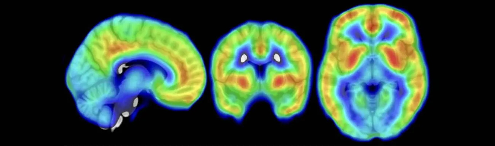
Imagine that you were on a bus or metro in the busy morning hour. Somebody steps on your toe. It is painful; not only painful (a sensory experience), but makes you upset (an emotional response). However, the person immediately apologizes for his/her accident. Even if you are still in pain, the sincerity of the apology can make your emotion subside. Just a second later, though, the same person steps on your toe again. With the same painful stimulus, your emotion will go through the sky. Why?
The somatosensory system is unique among the five sensory systems in our body. It enables us to feel a variety of inputs—touch, pressure, temperature, pain, and itch—all of which help us sense the external environment and also protect our body from injury or potential injury. Here, we will learn how the somatosensory system is organized. We will start with the special structures called sensory receptors that are located in the skin, muscle, joints, internal organs, and all over the body. We will then learn how this sensory information is passed along unique sensory pathways from the periphery all the way to our brain. Finally, we will gain a greater understanding of how that sensory information is modulated and used by our brain in ways that can make the same stimulus have different meanings to you, such as what happened in the repeat toe injuries example above.
9.1Somatosensory Receptors
By the end of this section, you should be able to
- Describe the anatomical properties of different sensory receptors.
- Identify the physiological properties of different sensory receptors.
- Describe the anatomy and neurotransmitter usage of primary afferents to the spinal cord.
When you lift a hot pot of boiling water from the stove, not only do you feel the temperature but also vibration due to the boiling content. Further, you may also notice the texture of the handle. How does this happen? How can you sense so many properties at once? Among all five senses, the body sense (somatosensory system) starts with the largest variety of different unique receptors. Each receptor connects via an axon to the central nervous system to transmit information to our brain to enable perception. This section will review how these receptors transduce such a variety of skin signals into neural signals headed to the central nervous system.
Peripheral receptors and functional modalities
Each somatosensation starts with the activation of one or more types of peripheral somatosensory receptors. Peripheral receptors include several major types, such as the Merkel disk, Meissner’s corpuscle , Ruffini endings, Pacinian corpuscle , free nerve endings, and hair cells (Mechanoreceptory types). These different sensory receptors enable us to feel touch, pressure, vibration, pain, and temperature.
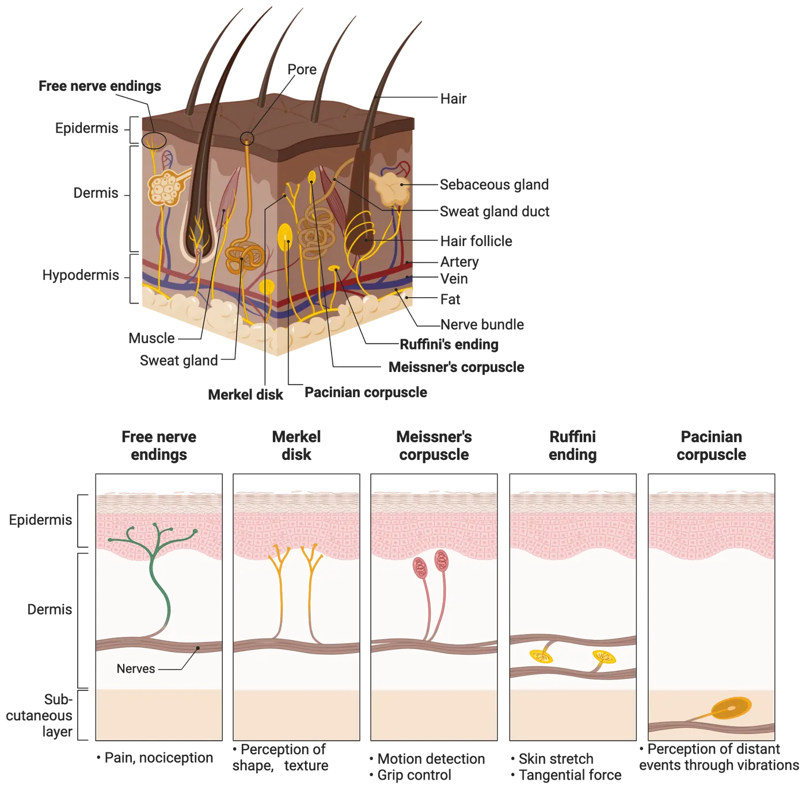
Touch receptors
Merkel disk, Meissner’s corpuscle, Ruffini endings, and Pacinian corpuscle all serve to transduce features of touch sensation. These disks and corpuscles are specialized structures in the skin that are connected to axons that send touch information to the spinal cord. These terminal structures are the starting points of the somatosensory system, so they are also called "sensory receptors". Here the term "receptor" is different from the neurotransmitter receptor on the cell membrane (much smaller, one protein molecule). The sensory receptor is a much larger structure (composed of many proteins). Within these specialized endings sit mechanosensitive cation channels which activate in response to mechanical pull from sensations like touch, pressure, and vibration. These channels, also called piezo channels, are permeable to Na+, K+, Ca2+, and Mg2+, with a slight preference for Ca2+. Piezo channel structure shows the protein structure of two major piezo channels. They both are made of 3 proteins that come together to form a central pore, through which ions move, with blade-like structures surrounding the pore. The discovery of piezo channels led to a Nobel prize in 2021 for Dr. Ardem Patapoutian, the scientist who first described them (Coste et al., 2010) (Piezo channel structure). PIEZO Channels: How Do They Allow Mechanosensation? shows how these channels open in response to mechanical force. The influx of ions through these channels leads to the generation of action potentials which propagate via highly myelinated Aβ fibers to the spinal cord.
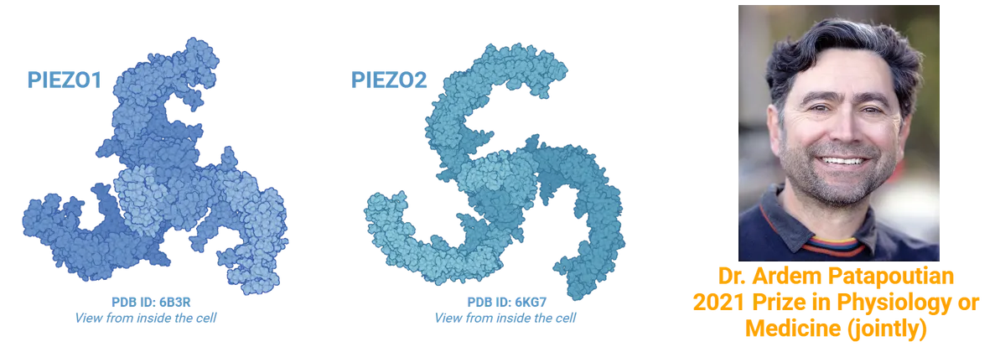
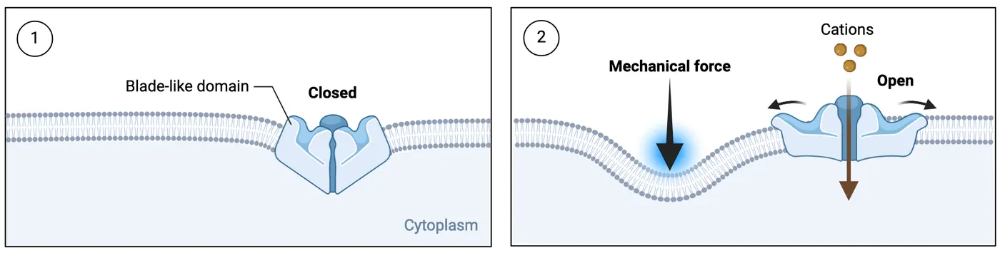
The four major mechanoreceptors (Merkel disks, Meissner’s corpuscles, Ruffini endings, and Pacinian corpuscles) are each sensitive to different kinds of touch. The location and shape of each receptor structure supports these different sensitivities. Mechanorecpetor receptive fields and adaptations summarizes these key features of the 4 receptor types. Next, we will review some key structural features of these receptors and how they support the receptor function.

| Merkel disk | Meissner's Corpuscle | Ruffini ending | Pacinian corpuscle | |
|---|---|---|---|---|
| Skin location | Superficial | Superficial | Deep | Deep |
| Adaptation | Slow | Rapid | Slow | Rapid |
First, their different locations in the skin help determine how large or small their receptive fields are, which for touch receptors means the area of the skin in which touch can activate them. Merkel disks and Meissner’s corpuscles are located more superficially around the epidermis and therefore have a smaller and clearly-defined receptive field. Ruffini endings and Pacinian corpuscles are located more in the deeper part of the skin (with a larger, blurry receptive field), near where hair follicles are located.
Second, the shape and composition of each touch receptor help determine how long they respond to stimuli, dividing them into rapid adapting versus slowly adapting receptors. The slowly adapting receptors include Merkel disk and Ruffini endings. When a force or stimulus is applied in their receptive field, those receptors will be constantly activated and generate electrical activities (e.g., pressure). On the other hand, the rapidly adapting receptors such as Meissner’s corpuscle and Pacinian corpuscle only respond or generate electrical activities when there is a dynamic change of forces or stimuli, such as vibration (Johansson and Vallbo, 1983; Koerber and Mendell, 1988). These adaptation properties combine with the receptive field to give the unique sensitivity of each of these 4 receptor types to specific touch modalities described in this figure.
Nociceptors
The specific receptor for sensing a high-threshold stimulus that is damaging or threatens damage to normal tissues is called a nociceptor. Free nerve endings serve as nociceptors, or receptors that transmit pain signals related to mechanical, thermal, or chemical sources. Free nerve endings are different from the preceding four mechanoreceptors. The role of free nerve endings is related to sensing pain and temperature. Free nerve endings lack any specialized structures around their terminals and are connected to or in continuation with unmyelinated C-fibers and myelinated Aδ fibers. There are separate types of nociceptors responding to each modality (i.e., mechanical, thermal, and chemical), but also polymodal receptors that respond to all. Below we will discuss further how nociceptors sense tissue damage and temperature specifically.
Some free nerve endings transmit pain signals related to tissue damage (Local mechanisms of nociception). For example, if someone cut their finger, the direct and indirect damage of the nerve terminals (C- or Aδ fibers) at the primary injury site will excite and generate action potentials, which will not only propagate to the spinal cord (generating pain perception), but also propagate through the axonal branch points to spread to other axonal terminals that connect to the same main axon. The invasion of action potentials to the nearby uninjured axonal terminals will lead to the release of several key neural peptides, CGRP (calcitonin-gene related peptide) from Aδ fiber and SP (Substance P) from C-fiber, which cause vasodilatation (redness and temperature) and plasma extravasation (edema). This phenomenon is called axonal reflex, a mechanism contributing to neurogenic inflammation. The primary injury also breaks blood vessels, leading to the accumulation of white blood cells, especially the mast cell. Mast cells can also release these neuropeptides and stimulate the axonal terminals and capillaries, leading to redness (rubor), heat (color), swelling (tumor), pain ( dolor), and loss of function (functio laesa), cardinal signs of inflammation.
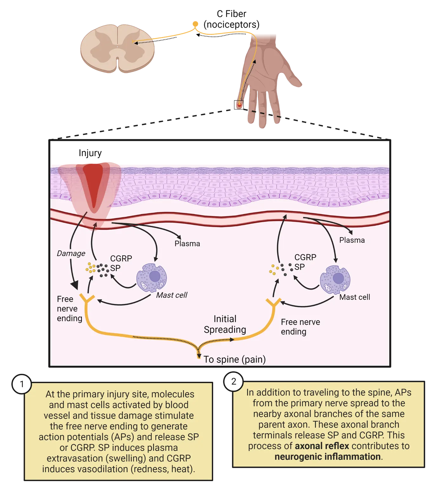
Other free nerve endings contain transient receptor potential (TRP) channels, which are temperature-sensitive mechanoreceptors. TRP channels open in response to temperature and come in a variety of types, each one sensitive to a different temperature. The TRP ion Channels reviews the temperature sensitivities of several kinds of TRPs. Dr. David Julius, also pictured in The TRP ion Channels, shared the 2021 Nobel Prize in Physiology or Medicine for his description of these channels. TRP channels transduce temperature information shows an example of how heat causes a warm-sensing TRP channel to open, allowing in positive ions that activate the free nerve ending, which then relays signals to the brain via the spinal cord.
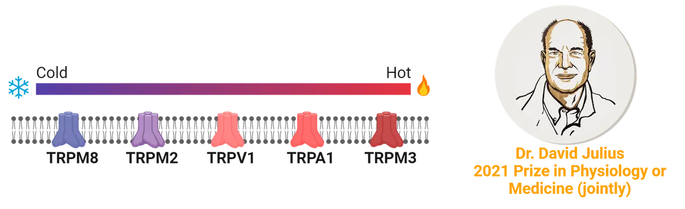
![A cube of skin is shown with a free nerve ending being exposed to heat from a flame. The axonal fiber of the free nerve ending goes to a cell body in the dorsal horn of the spinal cord. A synapse is formed by the central branch from the cell body onto a dorsal horn neuron. The dorsal horn neuron sends its axon across the midline then up the spine into the brain. A zoom-in on the spot where the flame meets the nerve ending shows a somatosensory cell membrane with a TRP channel that opens in response to heat, allowing ions to flow into the cell.](../assets/textbook/img/Figure-9.Z_TRP-channels-transduce-temperature-information.webp)
One notable example of a TRP channel is the capsaicin receptor. Capsaicin is the key chemical ingredient in hot chili peppers. When it binds to the capsaicin receptors, it activates a TRP channel (Samanta et al., 2018) that allows calcium ions to flow into the cell, leading to depolarization (Caterina et al., 1997; Julius, 2013). This is the same channel activated by hot temperatures, which is why a spicy pepper feels hot . A similar, but separate TRP channel activates in response to cold temperatures, as well as chemicals in foods that feel cold, like mint. Activation of TRP channels, therefore, transmit information about temperature, and also are part of our experience of temperature sensations associated with a number of chemicals (see Introduction).
Hair follicle mechanosensation
Throughout our body, the skin can be divided into hairy and glabrous skin (mainly on the palms and soles). In the hairy skin, an axonal terminal wraps around the bottom of the hair, the hair follicle, in the dermis. The reason why we can feel a breeze blowing across our faces is that all those tiny hairs (vellus hair, or peach fuzz) are bent by the airflow. The force is transduced to the hair follicles in the skin, causing the slightest displacement (in terms of nanometers). The follicle displacement causes a stretch of the axonal membrane wrapped around the follicle. There are many mechanosensitive Na+ channels in this wrapping axon, which open in response to this stretch. That is how we can feel the movement of hair. If the hair is pulled too hard, it can generate pain.
Primary afferents
As mentioned throughout the previous section, the different types of somatosensory receptors are connected to specialized axons with different diameters and myelination (Aβ, Aδ, C fibers, for example). Primary sensory afferent anatomy shows the pathways these fibers take from the receptors (e.g., in the skin) into the spinal cord. These first-order axons are also called primary afferents (Crawford and Caterina, 2020). The cell body of the primary afferent fiber is located in the dorsal root ganglion (DRG), from which a pseudo-unipolar neuron sends out a parent axon that splits off into a peripheral branch and a central branch (Lin and Chen, 2018; Haberberger et al., 2019). The peripheral branch is long and projects to the skin where it receives signals from a specific receptor, whereas the central branch is short and enters the nearby spinal cord through the dorsal root. The short branch ends with synapses onto the spinal cord dorsal horn neurons where neurotransmitters are released, or projects directly up the dorsal column of the spinal cord toward the brain. The spinal cord neurons also project up to various levels in the brain.
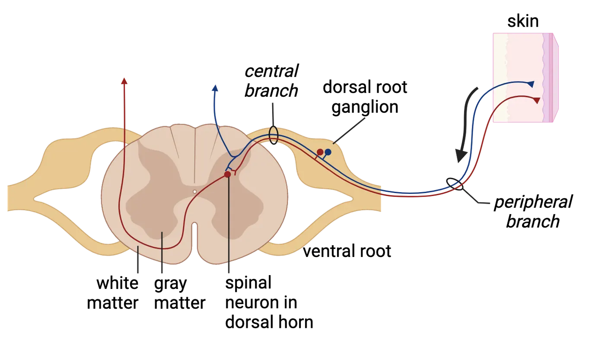
While the primary afferents all follow a similar path to the spinal cord, they each propagate electrical signals along that path at different speeds. The A-fibers are a family of myelinated axons with different axonal diameters and extent of myelination. As we learned in Introduction, the larger the diameter, the faster the conduction of the action potential. Sensory fibers provides a visualization of how these afferents compare in myelination and conduction speed. From large to small, they follow the order: Aα (12-20µm, 72-120 m/s), Aβ(6-12µm, 36-72 m/s), Aδ (1-6µm, 4-36 m/s), and unmyelinated C-fibers (0.2-1.5µm, 0.4-2 m/s). It is the difference of a racing car (120 m/s = 268 miles/hr) versus a fast walking (2 m/s = 4.5 miles/hr). Due to the difference in electrical signal conduction speed, even though both C-fibers and Aδ-fibers contribute to pain perception, Aδ-fibers are involved in fast and pricking pain, whereas C-fibers are involved in more slow and dull pain (Hunt and Mantyh, 2001; Julius and Basbaum, 2001).
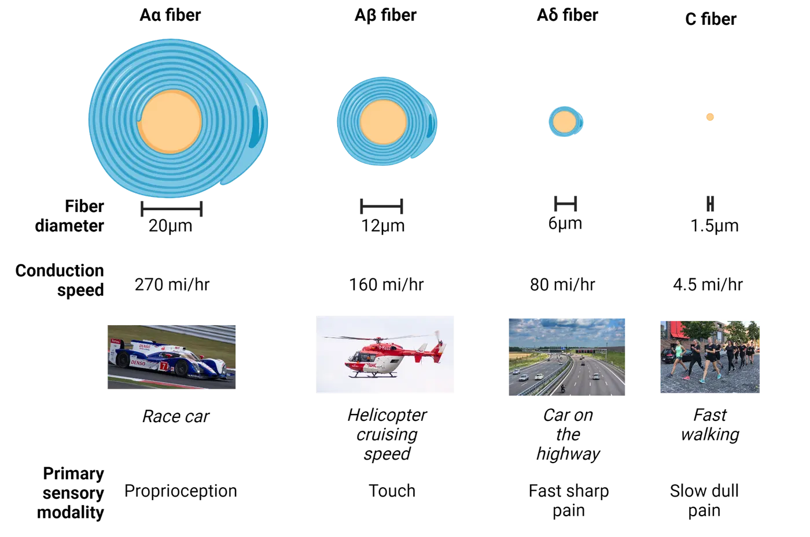
Summary
This section summarizes the neural structures in the peripheral sensory system as the starting point to receive, transduce, and propagate various modalities of somatosensory information to the central nervous system. Understanding various types of sensory receptors, their axon types, cell body location, and major neurotransmitters used will provide a solid foundation for understanding at the next level of neural transmission, the central nervous system.
Key terms
somatosensory receptors, primary afferents, free nerve endings, Merkel disk, Meissner’s corpuscle, Ruffini endings, Pacinian corpuscle, hair cells, mechanoreceptor, nociceptor, glutamate, substance P (SP), calcitonin gene-related peptide (CGRP), capsaicin, vasodilatation, plasma extravasation, TRPV1, piezo channelsReferences
Boyd, I. A. (1980). The isolated mammalian muscle spindle. Trends in Neurosciences, 3(11), 258–265. https://doi.org/10.1016/0166-2236(80)90096-X
Caterina, M. J., Schumacher, M. A., Tominaga, M., Rosen, T. A., Levine, J. D., & Julius, D. (1997). The capsaicin receptor: A heat-activated ion channel in the pain pathway. Nature, 389(6653), 816–824. https://doi.org/10.1038/39807
Coste, B., Mathur, J., Schmidt, M., Earley, T. J., Ranade, S., Petrus, M. J., Dubin, A. E., & Patapoutian, A. (2010). Piezo1 and Piezo2 are essential components of distinct mechanically activated cation channels. Science (New York, N.Y.), 330(6000), 55–60. https://doi.org/10.1126/science.1193270
Crawford, L. K., & Caterina, M. J. (2020). Functional anatomy of the sensory nervous system: Updates from the neuroscience bench. Toxicologic Pathology, 48(1), 174–189. https://doi.org/10.1177/0192623319869011
Haberberger, R. V., Barry, C., Dominguez, N., & Matusica, D. (2019). Human dorsal root ganglia. Frontiers in Cellular Neuroscience, 13, 271. https://doi.org/10.3389/fncel.2019.00271
Hulliger, M. (1984). The mammalian muscle spindle and its central control. Reviews of Physiology, Biochemistry and Pharmacology, 101, 1–110. https://doi.org/10.1007/BFb0027694
Hunt, S. P., & Mantyh, P. W. (2001). The molecular dynamics of pain control. Nature Reviews Neuroscience, 2(2), 83–91. https://doi.org/10.1038/35053509
Johansson, R. S., & Vallbo, Å. B. (1983). Tactile sensory coding in the glabrous skin of the human hand. Trends in Neurosciences, 6(C), 27–32. https://doi.org/10.1016/0166-2236(83)90011-5
Julius, D. (2013). TRP channels and pain. Annual Review of Cell and Developmental Biology, 29, 355–384. https://doi.org/10.1146/annurev-cellbio-101011-155833
Julius, D., & Basbaum, A. I. (2001). Molecular mechanisms of nociception. Nature, 413(6852), 203–210. https://doi.org/10.1038/35093019
Koerber, H. R., & Mendell, L. M. (1988). Functional specialization of central projections from identified primary afferent fibers. Journal of Neurophysiology, 60(5), 1597–1614. https://doi.org/10.1152/jn.1988.60.5.1597
Lin, Y. T., & Chen, J. C. (2018). Dorsal root ganglia isolation and primary culture to study neurotransmitter release. Journal of Visualized Experiments: JoVE, 140, 57569. https://doi.org/10.3791/57569
Proske, U. (1979). The golgi tendon organ. Trends in Neurosciences, 2, 7–8. https://doi.org/10.1016/0166-2236(79)90004-3
Samanta, A., Hughes, T. E. T., & Moiseenkova-Bell, V. Y. (2018). Transient receptor potential (TRP) channels. Sub-cellular Biochemistry, 87, 141–165. https://doi.org/10.1007/978-981-10-7757-9_6
Practice The multiple-choice and fill-in-the-blank questions for this section are interactive and live on OpenStax, so they are not carried here: open the book on openstax.org.
9.2Somatosensation in the Central Nervous System
By the end of this section, you should be able to
- Describe the anatomy of the spinal cord, thalamus, and somatosensory cortices.
- Define the ascending and descending pathways that are involved in transmitting somatosensory information.
- Explain the Gate Control theory.
- Describe how information flow to the limbic system contributes to the emotional response to pain.
From the cutaneous sensory receptors, action potentials travel through the dorsal horn to reach the lowest part of the central nervous system, the spinal cord. Axons with various levels of myelination and diameter synapse on the spinal cord dorsal horn or dorsal medulla neurons, then ascend to other levels in the brain, including the major relay station in the thalamus, and finally reach the primary somatosensory cortex where sensory perception happens. In this section, we will explain how sensory information is organized and processed from the dorsal horn of the spinal cord up to the brain, where we consciously perceive it.
Spinal Cord
The spinal cord is the lowest component of the central nervous system. It facilitates the transmission of body sensory information to the brain, as well as transmission of motor commands and autonomic nervous system modulation of internal organs from the brain to the body.
Anatomy of the spinal cord and dermatomes
The spinal cord has 31 segments, divided along the rostral-caudal axis into cervical (8), thoracic (12), lumbar (5), sacral (5), and coccygeal (1) segments. The spinal cord can also be divided into the dorsal versus ventral parts. While the ventral part is mainly involved in the processing of the motor system, the dorsal part is mainly sensory input. As covered in Introduction and reviewed in Spinal cord organization, in the spinal cord, the central part (shaped like a butterfly) is composed of neuronal cell bodies and dendrites (gray matter), which are surrounded by axons (white matter). Each segment of the spinal cord has two pairs of nerve bundles, the dorsal roots for sensory input and the ventral roots for motor output, as well as for sympathetic output. Because of this unique organization, the body surface is represented by different segments of the spinal cord, each of which is called a dermatome (Spinal cord organization) (Joseph and Loukas, 2015). In the spinal cord, the primary afferent axons synapse on the spinal cord neurons, or head straight up to the brain. The dorsal horn neurons can be subdivided into several laminae (or layers), each of which relays specific aspects of touch (laminae III-V) or pain (laminae I&II).
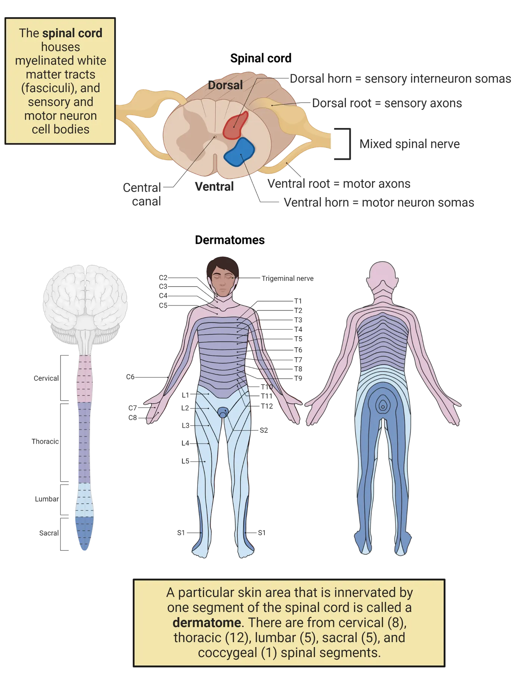
Neurotransmitters and receptors in the spinal cord
A variety of neurotransmitters serve somatosensation in the spinal cord. Though we often represent touch information as traveling directly from the receptors on through to the brain, in reality, multiple types of neurons are involved in a complex communication within the spinal cord, helping to determine what sensory information is conveyed to higher centers in the brain or to local reflex circuits. The participating neurons include the primary afferent terminals we already discussed, along with descending fibers coming from the supraspinal origin, and intrinsic neurons inside the spinal cord. Neurotransmitters from each of these classes of neurons work in combinations to maintain the excitability of the spinal sensory neurons. In general, all primary afferent fibers use glutamate as the major excitatory neurotransmitter; Aδ fiber and C fibers also contain CGRP and SP, respectively. CGRP and SP can also be released in peripheral tissue by primary afferents, which we discussed earlier when we learned about their role in axonal reflex and neurogenic inflammation (Local mechanisms of nociception). Descending fibers and spinal interneurons can release a variety of neurotransmitters, many of which will sound familiar from other chapters, such as glutamate, GABA, neurokinins, nerve growth factor, ATP, neuropeptides (e.g., substance P), CGRP, bradykinin, cannabinoids, endorphins, cytokines, nitric oxide, ATP. These neurotransmitters interact with a variety of different types of receptors resulting in excitation, inhibition, or neuromodulation. The end result is a complex network of regulation within the spinal cord to determine what sensory signals pass to the brain and what signals do not.
Gate control theory
Gate control theory provides an example of the kind of communication that can occur within the spinal cord to determine what information is passed on to the brain. This theory was proposed by Ronald Melzack and Patrick D. Wall in 1965 (Melzack and Wall, 1965). It indicates that somehow in the spinal cord there is a gate that only allows so much information to flow forward to the brain at any given point in time. In this theory, a gate for pain information is controlled by two different types of inputs, neurons carrying primary sensory information (touch or pain), and an inhibitory interneuron, both of which combine to influence whether a projection neuron sends pain information towards the brain.
Gate control theory of nociception diagrams this theory. In this model, activity of a pain projection neuron is controlled by a nociceptive C fiber, as well as a non-nociceptive A-fiber and an inhibitory interneuron. In response to a painful stimulus, the unmyelinated C-fiber that is responsible for pain activates the projection neuron and inhibits the inhibitory interneuron in the spinal cord. Both of these activities open the gate to increase pain (Gate control theory of nociception). The gate can be closed by the large myelinated A-fiber. The A-fiber, which transmits touch and vibration sensation, has 2 connections in this circuit: it excites the projection neuron weakly and it excites the inhibitory interneuron strongly. Strong A-fiber activation net inhibits the pain projection neuron through activation of more inhibitory interneuron activity in the spinal cord. This inhibition shuts down the gate, relieving the pain.
If you happen to hammer your finger, almost immediately you will shake your hand or rub or blow air to your injured finger to reduce pain. When you do this, you are using the “Gate Control Theory”. While shaking or rubbing, Aα/Aβ fibers are activated. Although there is an increased input from C-fibers as the result of injury for increased pain, activation of Aα/Aβ fibers will excite more inhibitory interneurons that will release GABA to the projection neurons to counteract or inhibit the injury-elicited pain. Though there are some aspects of pain sensation that have been found to contradict the Gate Control theory since its proposal in 1965, it remains the single most critical model of pain sensation processes.
![Top: A diagram of a neuronal circuit, showing connectivity of Ab touch fibers, C fibers, pain projection neuron and an inhibitory neuron. Middle: A diagram of a neuronal circuit, showing connectivity of Ab touch fibers, C fibers, pain projection neuron and an inhibitory neuron. C fiber is enlarged to suggest activation. Projection neuron fires more action potentials. Bottom: A diagram of a neuronal circuit, showing connectivity of Ab touch fibers, C fibers, pain projection neuron and an inhibitory neuron. C fiber is enlarged to suggest activation. Ab fiber is also enlarged. Projection neuron fires fewer action potentials.](../assets/textbook/img/Image-9.09_Gate-control-theory-of-nociception.webp)
Ascending pathways and their roles: from the spinal cord to the thalamus
As the sensory information comes to the spinal cord from the periphery, it will be processed inside the spinal cord first, then it will take two major systems to reach the brain. The first one is the dorsal column-medial lemniscal pathway for touch and pressure sensation and proprioception as shown in Somatosensory pathways for touch and pressure. In this pathway, the primary afferent fibers ascend in the dorsal column ipsilaterally all the way to the medulla. They then synapse on the dorsal column nuclei in the medulla (i.e., nucleus gracilis and nucleus cuneatus). The axons from these dorsal column neurons in the medulla (2nd order neurons) project to the contralateral side to form a bundle, the medial lemniscus, which synapse on third-order neurons in the thalamus. From there, the thalamocortical projections from these thalamic neurons go to the primary somatosensory cortex (S1).
The second major pathway for somatosensation to the brain is the anterolateral system (i.e., located at the anterior and lateral part of the spinal cord), which originates in the spinal cord cells receiving pain and temperature input. The anterolateral system projects to the supraspinal areas through five main pathways (Willis, 1985; Willis and Westlund, 1997). The spinothalamic tract (STT) is the most prominent pain and temperature pathway (Pain and temperature pathways). It originates from nociceptive-specific and wide dynamic range neurons in the dorsal horn of the spinal cord, and ends at the contralateral ventral posterolateral nucleus of the thalamus. Unlike the touch pathway, the STT crosses the midline in the spinal cord, at the same spinal level where primary afferents entered through the dorsal horn. In the STT, the projections from the spinal neurons proceed up the contralateral spinal column, to the thalamus.
Pain versus touch pathways provides a side-by-side comparison of this major difference in where each of these major pathways crosses the midline. Note how ascending touch information is in the ipsilateral spinal cord, while pain and temperature information is in the contralateral spinal cord to where the sensory information originated. For an interesting clinical implication of this difference between pain and touch pathways, try to do internet research on Brown-Sequard Syndrome and see if you can explain the clinical symptoms and signs.
![Top: A diagram of a finger with touch and pain fibers connecting to spinal cord. Touch pathways project up, ipsilaterally. Pain pathways synapse then send pathways contralaterally then up. Connections to contralateral thalamus for both pathways are shown, followed by projections to primary somatosensory cortex. Bottom: A diagram of a finger with touch and pain fibers connecting to a horizontal section of spinal cord. From the dorsal horn, touch pathways project up, ipsilaterally. Pain pathways synapse on a dorsal horn neuron and the next neuron sends pathways contralaterally then up.](../assets/textbook/img/Image-9.05_Pain-versus-touch-pathways.webp)
The remaining four pathways of the anterolateral system deal mostly with emotional and autonomic aspects of pain, and frequently project bilaterally in the brain. They are the spinoreticular tract (arousal), the spinomesencephalic tract (affective components of pain), the spinohypothalamic tract (to the autonomic control centers for fight or flight), and the cervicothalamic tract (playing a minor role).
Because of these different tracts that contribute to the sensory information propagation from the periphery to the brain, we will be able to not only sense the location and the intensity of somatosensory input but also generate emotional responses. Imagine that you are hiking in the late afternoon. It is getting dark, and you are tired. Every step you have is almost automatic. Then you step into a pothole, and sprain your ankle… The C-fiber or Aδ-fibers around your ankle constantly send action potentials to your spinal cord, activating the dorsal horn neurons. Through STT system, your brain knows where the pain is coming from and how strong it is. Activation of the spinoreticular system will boost your arousal level (see Introduction), whereas activation of the spinohypothalamic system will raise your sympathetic activity to increase your heart rate and blood pressure. Finally, if you are lucky and have a strong network of descending inhibitory systems (see below), through the spinomesencephalic tract, brainstem structures will be activated and send inhibitory signals to the lumbar spinal cord to reduce the spinal cord dorsal horn neuron activity, a self-built “closed-loop feedback” system that helps the individual to cope with pain.
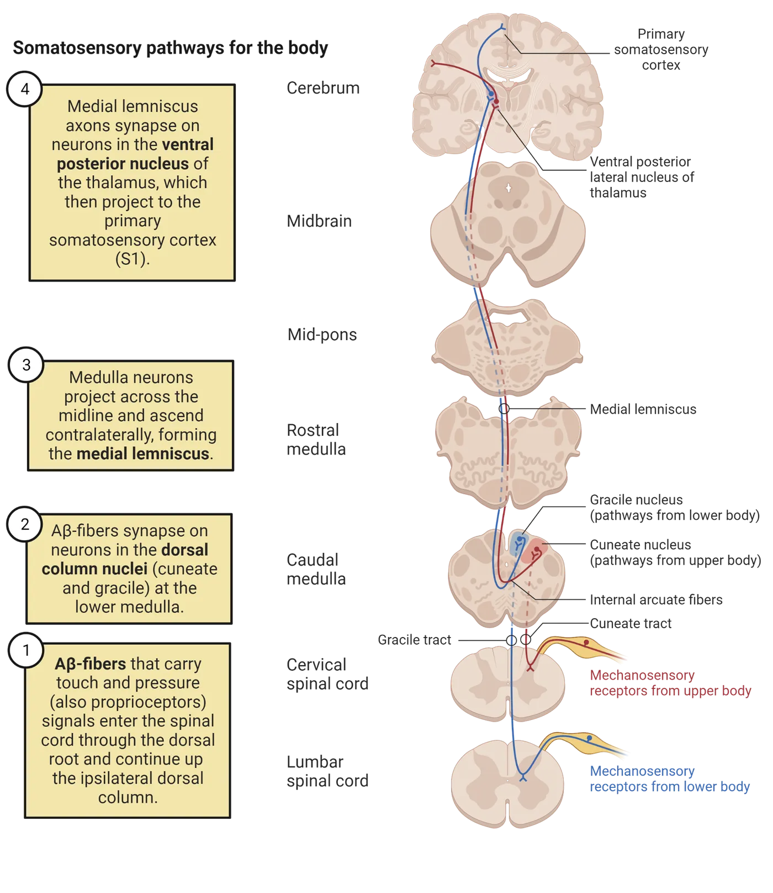
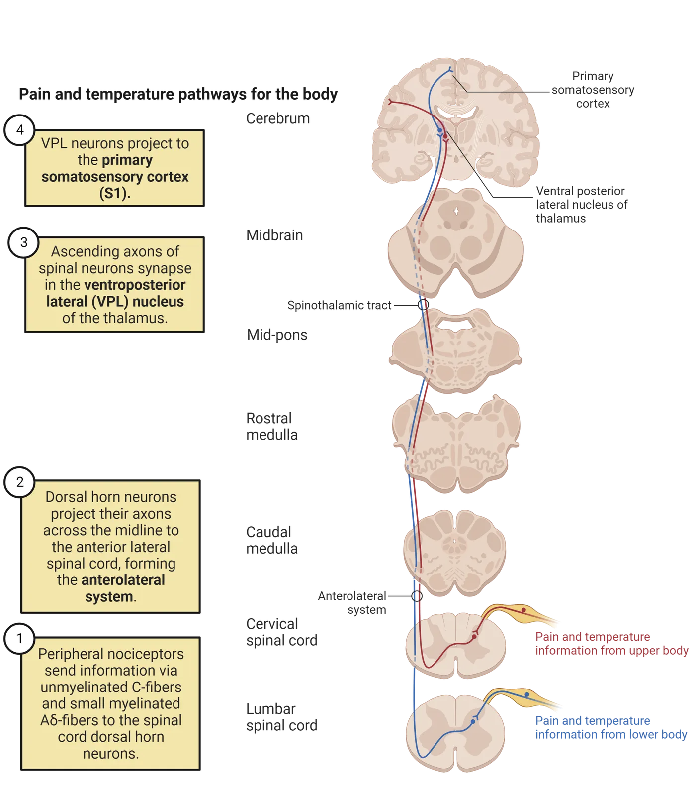
Descending inhibitory pathways
As we mentioned in our earlier discussion of the neurons that control spinal-level transmission of sensory information, our brain is organized in a way to not only receive ascending input from the periphery, but also to manage inputs through a descending system sending projections downward at different levels (Sandkuhler et al., 1987; Jones and Gebhart, 1988; Millan, 2002). This protective measure enables the individual’s ongoing performance without being distracted by pain. For example, when injuries happen to soldiers on the battlefield or athletes in sports competitions, they do not feel that much pain due to the strong activation of the descending inhibition. It is believed that the center controlling the descending inhibition is located in the periaqueductal gray (PAG) in the midbrain (Descending pain modulation).
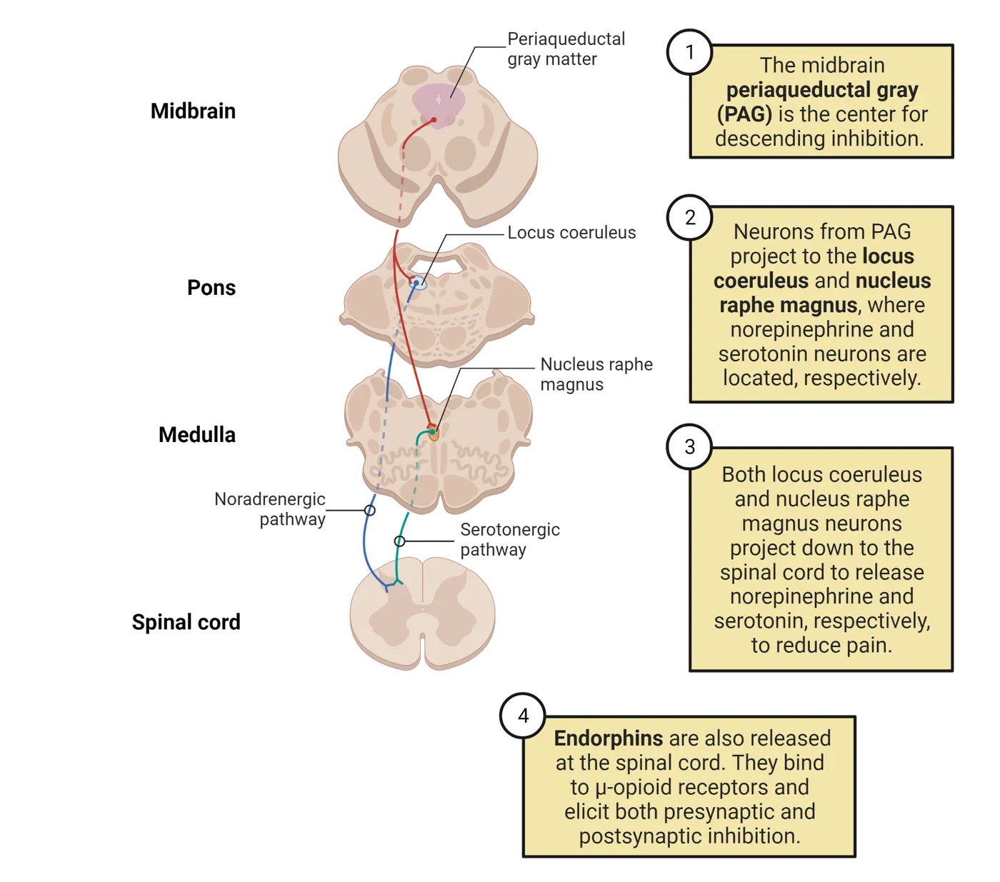
Three major inhibitory systems contribute to the descending inhibitory system that originates in the PAG. The first one is the endogenous opioid system that releases endorphins, which can inhibit the activities of the spinal cord dorsal horn pain projection neurons to reduce or block signals to the brain. The second one is the serotonergic system, with the cell bodies located in the nucleus raphe magnus (NRM) in the brainstem, which projects their axons to the spinal cord at different levels to release serotonin. When serotonin binds to their receptors in the spinal cord projection neurons, it suppresses their activity. The third system is the noradrenergic system. The cell bodies are located in the locus coeruleus (LC), or 'blue spot', a structure in the brainstem. The axons of the LC project down to the spinal cord and release neurotransmitter, norepinephrine/noradrenaline, which suppresses the activity of the spinal projection neurons. With the contribution of these three major descending inhibitory systems, a closed-loop of pain coping mechanism is established. However, it may vary from person to person. See more in emotional components of pain in the next main section.
Thalamus and other projections
The thalamus is the major gateway in our brain that processes not only somatosensory information but also auditory, visual, as well as gustatory information. There are several major subdivisions of the thalamus. It also contributes to modulating motor activities by communicating with the basal ganglion and the cerebellum. The major subgroup that relays the somatosensory information is the ventral posterior lateral (VPL) and ventral posterior medial (VPM) nuclei. The VPL is responsible for relaying signals coming from the trunk and extremities and is shown as the major relay in Pain and temperature pathways. The VPM is just medial to the VPL and receives information from the head area. Neurons in either VPL or VPM are the third-order neurons that project to the primary somatosensory cortex (S1) for the perception of the sensory information in the body.
Cortical process of touch and pain
Somatosensory information first reaches the cortex in the primary somatosensory cortex (S1), in the postcentral gyrus in the anterior part of the parietal lobe. The sensory receptive areas of the body are represented on S1 as an inverted little person lying along the sulci and gyri of the cortical surface, shown in The sensory homunculus. This person, known as a homunculus, is a distorted representation of a human body with the size of each body part proportionate to that area’s amount of sensory innervation. For example, the hand requires more cortical resources, and it, therefore, gets more surface area (and more neurons) dedicated to its representation. S1 sends most of its projections to the secondary somatosensory cortex (S2) for further sensory processing, though there is also a communication between S1 and the motor cortices in the frontal lobe for sensory-guided motor function.
The mainstream of information after S1 and S2 flows posteriorly to reach the posterior parietal cortex, then to the temporal association cortex, parahippocampal cortex, and the cingulate cortex. The posterior parietal area receives information not only from the somatosensory cortex but also from auditory, and visual cortices. Information can therefore be integrated here from multiple modalities and then project to the prefrontal area where the integrated information can be analyzed, a decision can be made, and the motor response can be planned. Projections to the limbic system also play a critical role in processing our emotional response to somatosensory information, particularly pain or itch (Bushnell et al., 2013). The contribution of the combination of limbic system activities enables the individual to experience and integrate their emotion (e.g., anger, fear, anxiety, depression) in response to peripheral input (e.g., visual, sound, pain) or retrieval from the past experience (memory), to generate physiological responses (heart rate and blood pressure) or psychological experiences (Gilam et al., 2020). We will discuss this limbic component of pain more in the next section.
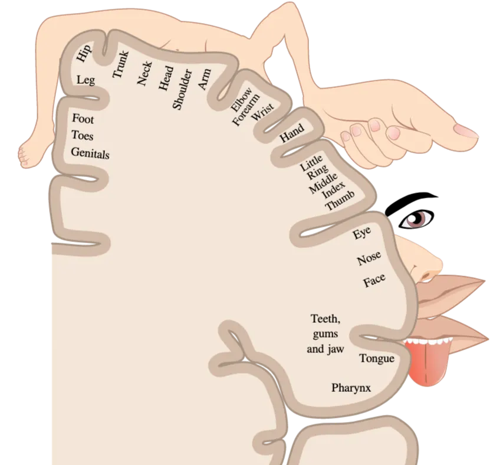
Summary
This section covers the anatomical organization of the spinal cord, pathways to the brainstem and thalamus, and the primary somatosensory cortex, in addition to the gate control system, descending inhibitory system, and limbic system. With this knowledge, not only do we understand the somatosensory information flow to the brain to enable perception, but also understand how the peripheral stimulation to the body (touch, burning, pain, and other inputs) can generate emotional responses. Returning to our example from the beginning of this section, we can appreciate how getting stepped on once activated our physical and emotional response to pain, but we could use our posterior parietal cortex to integrate multiple sources of information (the apology) and plan a calm response (using our prefrontal cortex). But when we get stepped on again, the same stimulus integrates with our memories to yield a stronger emotional response the second time. This example shows how sensation is more than just the activation of peripheral receptors; it interacts with multiple brain systems to help guide our behaviors.
Key terms
Dorsal root, dorsal root ganglion, dorsal horn neuron, Gate control theory, STT, VPL/VPM of the thalamus, PAG, LC, NRM, S1, S2, posterior parietal cortex, limbic systemReferences
Bushnell, M. C., Ceko, M., & Low, L. A. (2013). Cognitive and emotional control of pain and its disruption in chronic pain. Nature Reviews Neuroscience, 14(7), 502–511. https://doi.org/10.1038/nrn3516
Jones, S. L., & Gebhart, G. F. (1988). Inhibition of spinal nociceptive transmission from the midbrain, pons and medulla in the rat: Activation of descending inhibition by morphine, glutamate and electrical stimulation. Brain Research, 460(2), 281–296. https://doi.org/10.1016/0006-8993(88)90373-3
Joseph, S. C., & Loukas, M. (2015). History of the dermatomes. Nerves and Nerve Injuries, 1, 485–493. https://doi.org/10.1016/B978-0-12-410390-0.00037-8
Mai, J. K., & Majtanik, M. (2019). Toward a common terminology for the thalamus. Frontiers in Neuroanatomy, 12, 114. https://doi.org/10.3389/fnana.2018.00114
Melzack, R., & Wall, P. D. (1965). Pain mechanisms: A new theory. Science (New York, N.Y.), 150(3699), 971–979. https://doi.org/10.1126/science.150.3699.971
Millan, M. J. (2002). Descending control of pain. Progress in Neurobiology, 66(6), 355–474. https://doi.org/10.1016/s0301-0082(02)00009-6
Sandkühler, J., Fu, Q. G., & Zimmermann, M. (1987). Spinal pathways mediating tonic or stimulation-produced descending inhibition from the periaqueductal gray or nucleus raphe magnus are separate in the cat. Journal of Neurophysiology, 58(2), 327–341. https://doi.org/10.1152/jn.1987.58.2.327
Sheridan, N., & Tadi, P. (2023). Neuroanatomy, thalamic nuclei. In StatPearls. StatPearls Publishing.
Willis, W. D., Jr. (1985). The pain system: The neural basis of nociceptive transmission in the mammalian nervous system. Pain and Headache, 8, 1–346.
Willis, W. D., & Westlund, K. N. (1997). Neuroanatomy of the pain system and of the pathways that modulate pain. Journal of Clinical Neurophysiology: Official Publication of the American Electroencephalographic Society, 14(1), 2–31. https://doi.org/10.1097/00004691-199701000-00002
Practice The multiple-choice and fill-in-the-blank questions for this section are interactive and live on OpenStax, so they are not carried here: open the book on openstax.org.
9.3Pain and Itch
By the end of this section, you should be able to
- Define pain.
- Identify the different types of pain.
- Describe the neural structures involved in emotional pain.
- Describe the overlapping nature of brain areas that contribute to both pain and depression.
- Explain the cause of itch and the difference from pain.
Pain and itch are specialized somatosensory experiences that are both transmitted by shared neural pathways that start with C- and Aδ fibers in the periphery. While pain can happen in the cutaneous as well as deep tissues, itch predominantly occurs in the superficial tissue, such as the skin. We already discussed the neural pathways of touch and pain in Somatosensory Receptors. However, there are some unique aspects of pain and itch that require separate consideration, which we will discuss here. Pain, in particular, comes with a strong emotional component. In our example of getting stepped on while on the bus, a core part of the response to the pain is our feelings of anger. This emotional component of pain gives it relevance to a variety of diseases and disorders of the brain, as we will learn in this section.
Pain definition and types
Pain is defined as: “An unpleasant sensory and emotional experience associated with, or resembling that associated with actual or potential tissue damage (Raja et al., 2020).” Some of the key points included in this definition include that pain is always a personal subjective experience that is influenced to varying degrees by biological, psychological, and social factors. Although pain usually serves an adaptive role, it may have adverse effects on function and social and psychological well-being. Verbal description is only one of several behaviors to express pain; the inability to communicate does not negate the possibility that a human or a nonhuman animal experiences pain.
Pain can be subdivided into several categories depending on the duration (acute or chronic), location (e.g., lower back pain, migraine), and causes (nociceptive, inflammatory, or neuropathic). Nociceptive pain results from the direct activation of nociceptors in the skin or soft tissue in response to tissue injury and usually arises from accompanying inflammation. Neuropathic pain results from direct injury to nerves in the peripheral or central nervous systems and often involves a burning or electric sensation (reflex sympathetic dystrophy, postherpetic neuralgia, phantom limb, and anesthesia dolorosa). Although acute pain is usually protective, chronic pain serves no purpose but only makes patients miserable. Please see details for pain treatment in Pain Relief.
Congenital insensitivity to pain
There is one genetically determined condition in which patients do not experience pain but do experience the normal sensation of light touch and deep tendon reflexes. It comes in two forms: congenital insensitivity to pain (CIP), or congenital insensitivity to pain with anhidrosis (CIPA). Insensitivity to pain in CIP is caused by mutation of the voltage-gated sodium channel α-subtypes Nav1.7, which are used heavily by pain fibers (Goodwin and McMahon, 2021; MacDonald et al., 2021). Because of the loss of protective mechanism provided by pain, children with CIP usually suffer multiple injuries on the body surface, joint damage, and bone fractures. In CIPA patients, in addition to the symptoms described above, they also experience anhidrosis (no sweat) as the result of sensory and autonomic neuropathy, leading to death within the first 3 years of life because of hyperpyrexia (high body temperature) (Rosemberg et al., 1994; Gong et al., 2021). The example of CIP is instructive for the adaptive value of pain. Though the subsequent sections will describe maladaptive aspects of pain, the root value of pain as a survival signal should not be forgotten.
Psychological contribution to pain
Pain involves not only physiological processes but also emotional responses, cognitive evaluations, and behavioral responses. Both physiological and psychological factors are integrated into the experience of pain and our emotional, cognitive, and behavioral responses to it (Gamsa, 1994; Baliki et al., 2006; Borsook and Becerra, 2009; Linton and Shaw, 2011; Bushnell et al., 2013; Gilam et al., 2020). These two factors are so intertwined that pain in the absence of injury, which is assumed to be purely psychological, activates similar brain pathways as pain originating in bodily damage. The feedback between psychological responses to pain and subsequent perception of pain is complex and extensive.
Pain disorders demonstrate the complex interchange between psychological responses and pain perception. Both physical pain from injury and pain that is psychological in origin can lead to pain disorders, or the experience of severe stress due to chronic, debilitating pain. The American Psychiatric Association (2022) recognizes this with two psychiatric diagnoses associated with pain in the Diagnostic and Statistical Manual of Mental Disorders V-TR: pain disorder associated with psychological factors either with or without a diagnosed medical condition (medical conditions such as rheumatoid arthritis, appendicitis, fractures, sprained ankle, infections, cancer, etc.). As these diagnostic categories imply, both psychological factors and a general medical condition have important roles in the onset, severity, exacerbation, and maintenance of pain. As an example, it has been found that pain (such as that from an injury or physical illness) attracts attention and that increased attention to pain also enhances the painfulness of nociceptive stimulation. This positive feedback loop (pain begets attention, which begets more pain) is attributed to the reduction of activation in key regions of the pain matrix, including the thalamus, insula, and parts of the anterior cingulate. Of course, psychological processes (such as distraction) can also reduce pain perception. The areas involved in distraction during the processing of nociceptive stimulation seem to be mediated by a prefrontal–cingulate top-down modulation of the brainstem structures. The inhibition of ascending nociceptive input comes from the powerful descending pain modulatory pathways originating in structures such as the amygdala, hypothalamus, insula, anterior cingulate cortex, periaqueductal grey, and rostroventral medulla. Projections from these higher structures contribute to descending inhibition of spinal cord dorsal horn neurons, reducing incoming transmission of pain information.
Limbic system contribution to emotional aspects of pain
The limbic system forms a rim (Latin limbus) in the medial wall of the hemispheres (Rolls, 2015). It includes the various cortical areas that make up the limbic lobe (especially medial areas of the temporal and frontal lobes) and the subcortical regions connected with these cortical areas, such as the amygdala and hypothalamus (Introduction). Somatosensory system input to the limbic system is what makes things like itch or pain feel unpleasant and causes people to feel agitated, angry, or depressed. Limbic system response to somatosensation shows one example of how sensory information such as pain can influence limbic structures, which in turn help create subjective feelings and coordinate bodily responses. – Do you still recall the hypothetical situation if someone steps on your toe twice (at the beginning of this chapter)? Activation of your limbic system is a key step in creating your emotional response to the painful toe steps.
This connection between pain and emotion-associated brain regions may be relevant to psychiatric disorders. For example, there is quite an extensive overlap between the neural circuitry active in chronic pain and the network of some psychiatric disorders. Both circuitries for chronic pain and depression, for instance, can show similar activation patterns. On the other hand, reduced prefrontal activity often observed in schizophrenia patients can suppress the experience of pain.
Chronic pain and depression
While brief pain may help us in many situations, chronic pain is almost always detrimental. Based on the criteria of the Diagnostic and Statistical Manual of Mental Disorders, chronic pain can be associated with broad categories of other clinical conditions (co-morbidity), including affective disorders, anxiety disorders, post-traumatic stress disorder, substance dependence, sleep disorders, cognitive disorders, malingering, personality disorders, suicidality, fatigue, obesity, etc. Here, we will further discuss the link between chronic pain and depression, which is prevalent and well-established.
Chronic pain and depression are intertwined with each other. About 8% of the U.S. population is depressed. In contrast, of those with chronic pain, 18–35% have been reported to be depressed and 6.3% have a major depressive disorder ( MDD). Conversely, when surveying people with MDD, painful physical symptoms have been reported to occur in 50–66.3% of patients, a rate which is much higher than in the general population. Research into the connection between chronic pain and depression has revealed numerous clinically important facets to their interdependence: 1) depression is associated with chronic pain; 2) chronic pain can exacerbate depression; 3) in predisposed individuals, pain may be etiologically related to the onset of depression; 4) depression can affect pain perception; 5) treatment of depression can improve disability, and 6) improving pain can improve depression.
The intertwining of depression and chronic pain seems to be rooted in shared monoamine neurocircuitry. For example, it has been found that the dysfunction of the brain’s serotonin system is related to both pain and depression (Bair et al., 2003; Hilderink et al., 2012; IsHak et al., 2018; Zhou et al., 2019). Serotonergic system dysfunction is associated with depression and many mainstream treatments of depression target serotonin. Coincident with this role in depression, the serotonergic neurons of the dorsal raphe nucleus send serotonergic afferents to and receive input from limbic structures involved in cognitive and emotional functions. However, dorsal raphe serotonergic neurons also send projections to the spinal cord via descending pathways, resulting in inhibition of spinal nociceptive processing. Serotonergic activity can therefore not only regulate mood states, but also reduce pain perception. There is likely a similar role for norepinephrine systems as well. As evidence of the role of serotonin and norepinephrine in chronic pain, venlafaxine and duloxetine, both selective serotonin and norepinephrine reuptake inhibitor antidepressants, have demonstrated efficacy in reducing pain in patients with diabetic neuropathy. These findings are a good reminder how important it is to always keep in mind the role of the limbic system in regulating not just psychological or psychiatric disorders but also our perception of pain (Limbic system response to somatosensation).
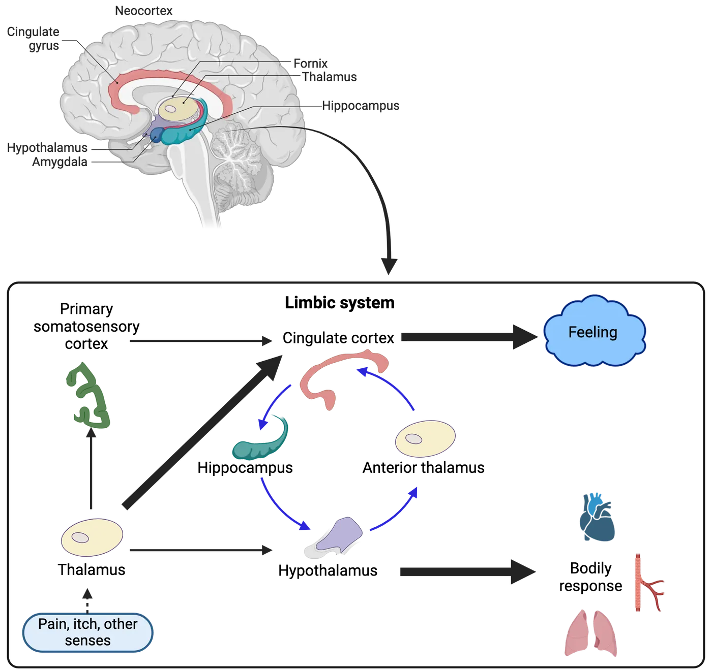
Itch mechanisms and treatment
Itch sensation (also known as pruritus) plays an important protective role for an individual just like pain. Itch lets us know there is something unexpected and possibly dangerous on our skin, such as a parasite or foreign plant matter. Itch is thus useful because it directs you to scratch the itchy area and remove whatever is irritating your skin. However, as with chronic pain, chronic itch can disable an individual. The neural mechanisms for itch sensation are not fully understood. As a mechanism for the itch, some neurotransmitters or peptides (such as histamine and cowhage spicules) are suggested to bind to their specific receptors on free nerve terminals underneath the skin, thereby stimulating C-fiber and Aδ-fibers (Ikoma et al., 2006; Potenzieri and Undem, 2012; Bautista et al., 2014; Lamotte et al., 2014). But transmission from there to the spinal cord, as well as to the brain, is unclear.
Let’s use a mosquito bite as an example of what we do understand about itch (Local mechanisms of itch). The mosquito saliva contains proteins that are immunogenic to humans. By triggering a local immune response, mast cells are aggregated around the biting site and release histamine. Histamine increases the permeability of the capillaries, leading to bumps, and increases vasodilatation, leading to redness. It also binds to histamine receptors (especially the H1 subtype) to activate a G-protein, in turn causing depolarization of primary C-fiber and Aδ-fibers afferent terminals, leading to the sensation of itching.
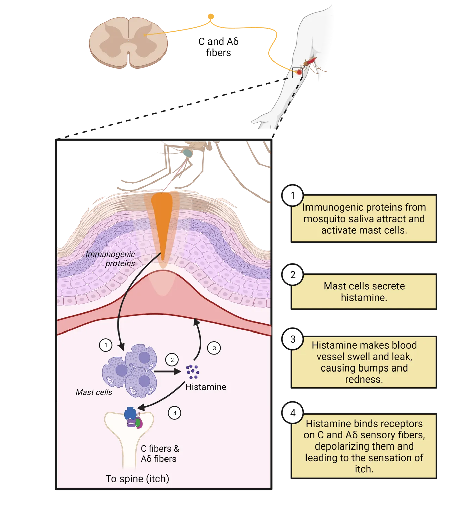
Cowhage is a bean-like plant that provides another example of itch-inducing stimuli. The tiny needle-like spicules on the pods are the ones that cause itch from cowhage. Insertion of cowhage spicule(s) into the superficial skin is frequently applied as an itch model in research. The active component of cowhage, termed mucunain, is a novel cysteine protease (Reddy et al., 2008). By binding to the protease-activated receptors (PAR) a member of the G-protein coupled receptor family, it mobilizes Ca2+ ions and excites the C-fibers and Aδ-fibers nerve terminals. Both of these examples demonstrate our understanding of major itch mechanisms at the level of skin receptors.
How itch transmits and is processed within the central nervous system is unclear. The sensation of the itch is transmitted much slower than the sensation of touch and, though itch appears to use C-fibers (pruriceptors) and Aδ-fibers, it does not seem to be a subclassification of pain. There exist two lines of evidence that itch is different from pain. (1) Vigorous scratching produces mild pain and pain inhibits itch. (2) Opiates reduce pain and increase itch. This inhibitory relationship between pain and itch is evidence that itch is not a type of pain. In addition, molecules that induce pain do not elicit an itch sensation or vice versa (Lamotte et al., 2014). When primary afferent activity relaying itch reaches the spinal cord, it has been suggested that the spinal parabrachial pathway plays a critical role in itch processing that leads to itch-induced scratching behaviors (Bautista et al., 2014; Mu et al., 2017; Dong and Dong, 2018). Yet, we still understand very little about how it signals centrally.
The treatment of minor itch includes: Applying cold compresses, using moisturizing lotions, taking lukewarm or oatmeal baths, using over-the-counter hydrocortisone cream or antihistamines, and avoiding scratching, wearing irritating fabrics, and exposure to high heat and humidity. For severe or chronic itch, prescribed medication, including antihistamines and topical steroids, or more rarely steroid pills and antibiotics, may also be needed.
Summary
The emotional experience of pain is contributed to significantly by the limbic system structures, which also play a critical role in the regulation of our emotions, such as depression. Clinically, increased pain will make depression worse, and vice versa; proper treatment of one will also relieve the other. Anatomical and physiological evidence suggests that they share the same neural circuitry.
Although pain and itch share similarities in activities in both C- and Aδ-fibers and both are subjective in nature, their functional mechanisms are quite different. While pain can be elicited by various stimulation (mechanical, thermal, chemical, and electrical), itch is mainly induced by chemical stimulation.
Key terms
Pain, nociceptive pain, neuropathic pain, itch, histamine, cowhage Congenital insensitivity to pain (CIP), congenital insensitivity to pain with anhidrosis (CIPA) , Limbic system , DSM-IV, major depressive disorder (MDD), dorsal raphe nucleus (DRN), serotonin (5-HT), norepinephrine (NE)References
Bair, M. J., Robinson, R. L., Katon, W., & Kroenke, K. (2003). Depression and pain comorbidity: A literature review. Archives of Internal Medicine, 163(20), 2433–2445. https://doi.org/10.1001/archinte.163.20.2433
Baliki, M. N., Chialvo, D. R., Geha, P. Y., Levy, R. M., Harden, R. N., Parrish, T. B., & Apkarian, A. V. (2006). Chronic pain and the emotional brain: Specific brain activity associated with spontaneous fluctuations of intensity of chronic back pain. The Journal of Neuroscience: The Official Journal of the Society for Neuroscience, 26(47), 12165–12173. https://doi.org/10.1523/JNEUROSCI.3576-06.2006
Bautista, D. M., Wilson, S. R., & Hoon, M. A. (2014). Why we scratch an itch: The molecules, cells and circuits of itch. Nature Neuroscience, 17(2), 175–182. https://doi.org/10.1038/nn.3619
Borsook, D., & Becerra, L. (2009). Emotional pain without sensory pain--dream on?. Neuron, 61(2), 153–155. https://doi.org/10.1016/j.neuron.2009.01.003
Cook, C. D., & Nickerson, M. D. (2005). Nociceptive sensitivity and opioid antinociception and antihyperalgesia in Freund's adjuvant-induced arthritic male and female rats. The Journal of Pharmacology and Experimental Therapeutics, 313(1), 449–459. https://doi.org/10.1124/jpet.104.077792
Dance, A. (2019). Why the sexes don't feel pain the same way. Nature, 567(7749), 448–450. https://doi.org/10.1038/d41586-019-00895-3
Dominguez, C. A., Kouya, P. F., Wu, W. P., Hao, J. X., Xu, X. J., & Wiesenfeld-Hallin, Z. (2009). Sex differences in the development of localized and spread mechanical hypersensitivity in rats after injury to the infraorbital or sciatic nerves to create a model for neuropathic pain. Gender Medicine, 6 Suppl 2, 225–234. https://doi.org/10.1016/j.genm.2009.01.003
Dong, X., & Dong, X. (2018). Peripheral and central mechanisms of itch. Neuron, 98(3), 482–494. https://doi.org/10.1016/j.neuron.2018.03.023
Gaumond, I., Arsenault, P., & Marchand, S. (2002). The role of sex hormones on formalin-induced nociceptive responses. Brain Research, 958(1), 139–145. https://doi.org/10.1016/s0006-8993(02)03661-2
Gilam, G., Gross, J. J., Wager, T. D., Keefe, F. J., & Mackey, S. C. (2020). What is the relationship between pain and emotion? Bridging constructs and communities. Neuron, 107(1), 17–21. https://doi.org/10.1016/j.neuron.2020.05.024
Gong, W. Y., Li, C. G., Cheng, C., & Fan, K. (2021). Open reduction and internal fixation of femoral fracture without anesthesia in patient with congenital insensitivity to pain and anhidrosis. Pain Medicine (Malden, Mass.), 22(7), 1709–1710. https://doi.org/10.1093/pm/pnaa423
Goodwin, G., & McMahon, S. B. (2021). The physiological function of different voltage-gated sodium channels in pain. Nature Reviews Neuroscience, 22(5), 263–274. https://doi.org/10.1038/s41583-021-00444-w
Greenspan, J. D., Slade, G. D., Bair, E., Dubner, R., Fillingim, R. B., Ohrbach, R., Knott, C., Mulkey, F., Rothwell, R., & Maixner, W. (2011). Pain sensitivity risk factors for chronic TMD: Descriptive data and empirically identified domains from the OPPERA case control study. The Journal of Pain, 12(11 Suppl), T61–T74. https://doi.org/10.1016/j.jpain.2011.08.006
Hilderink, P. H., Burger, H., Deeg, D. J., Beekman, A. T., & Oude Voshaar, R. C. (2012). The temporal relation between pain and depression: Results from the longitudinal aging study Amsterdam. Psychosomatic Medicine, 74(9), 945–951. https://doi.org/10.1097/PSY.0b013e3182733fdd
Hoffmann, D. E., Fillingim, R. B., & Veasley, C. (2022). The woman who cried pain: Do sex-based disparities still exist in the experience and treatment of pain?. The Journal of Law, Medicine & Ethics: A Journal of the American Society of Law, Medicine & Ethics, 50(3), 519–541. https://doi.org/10.1017/jme.2022.91
Ikoma, A., Steinhoff, M., Ständer, S., Yosipovitch, G., & Schmelz, M. (2006). The neurobiology of itch. Nature Reviews Neuroscience, 7(7), 535–547. https://doi.org/10.1038/nrn1950
IsHak, W. W., Wen, R. Y., Naghdechi, L., Vanle, B., Dang, J., Knosp, M., Dascal, J., Marcia, L., Gohar, Y., Eskander, L., Yadegar, J., Hanna, S., Sadek, A., Aguilar-Hernandez, L., Danovitch, I., & Louy, C. (2018). Pain and depression: A systematic review. Harvard Review of Psychiatry, 26(6), 352–363. https://doi.org/10.1097/HRP.0000000000000198
Kim, S. J., Calejesan, A. A., Li, P., Wei, F., & Zhuo, M. (1999). Sex differences in late behavioral response to subcutaneous formalin injection in mice. Brain Research, 829(1-2), 185–189. https://doi.org/10.1016/s0006-8993(99)01353-0
LaCroix-Fralish, M. L., Tawfik, V. L., & DeLeo, J. A. (2005). The organizational and activational effects of sex hormones on tactile and thermal hypersensitivity following lumbar nerve root injury in male and female rats. Pain, 114(1-2), 71–80. https://doi.org/10.1016/j.pain.2004.12.006
LaMotte, R. H., Dong, X., & Ringkamp, M. (2014). Sensory neurons and circuits mediating itch. Nature Reviews Neuroscience, 15(1), 19–31. https://doi.org/10.1038/nrn3641
Linton, S. J., & Shaw, W. S. (2011). Impact of psychological factors in the experience of pain. Physical Therapy, 91(5), 700–711. https://doi.org/10.2522/ptj.20100330
Lu, Y. C., Chen, C. W., Wang, S. Y., & Wu, F. S. (2009). 17Beta-estradiol mediates the sex difference in capsaicin-induced nociception in rats. The Journal of Pharmacology and Experimental Therapeutics, 331(3), 1104–1110. https://doi.org/10.1124/jpet.109.158402
MacDonald, D. I., Sikandar, S., Weiss, J., Pyrski, M., Luiz, A. P., Millet, Q., Emery, E. C., Mancini, F., Iannetti, G. D., Alles, S. R. A., Arcangeletti, M., Zhao, J., Cox, J. J., Brownstone, R. M., Zufall, F., & Wood, J. N. (2021). A central mechanism of analgesia in mice and humans lacking the sodium channel NaV1.7. Neuron, 109(9), 1497–1512.e6. https://doi.org/10.1016/j.neuron.2021.03.012
Mogil, J. S. (2020). Qualitative sex differences in pain processing: Emerging evidence of a biased literature. Nature Reviews Neuroscience, 21(7), 353–365. https://doi.org/10.1038/s41583-020-0310-6
Mu, D., Deng, J., Liu, K. F., Wu, Z. Y., Shi, Y. F., Guo, W. M., Mao, Q. Q., Liu, X. J., Li, H., & Sun, Y. G. (2017). A central neural circuit for itch sensation. Science (New York, N.Y.), 357(6352), 695–699. https://doi.org/10.1126/science.aaf4918
Potenzieri, C., & Undem, B. J. (2012). Basic mechanisms of itch. Clinical and Experimental Allergy: Journal of the British Society for Allergy and Clinical Immunology, 42(1), 8–19. https://doi.org/10.1111/j.1365-2222.2011.03791.x
Presto, P., Mazzitelli, M., Junell, R., Griffin, Z., & Neugebauer, V. (2022). Sex differences in pain along the neuraxis. Neuropharmacology, 210, 109030. https://doi.org/10.1016/j.neuropharm.2022.109030
Racine, M., Tousignant-Laflamme, Y., Kloda, L. A., Dion, D., Dupuis, G., & Choinière, M. (2012). A systematic literature review of 10 years of research on sex/gender and experimental pain perception - part 1: Are there really differences between women and men?. Pain, 153(3), 602–618. https://doi.org/10.1016/j.pain.2011.11.025
Racine, M., Tousignant-Laflamme, Y., Kloda, L. A., Dion, D., Dupuis, G., & Choinière, M. (2012). A systematic literature review of 10 years of research on sex/gender and pain perception - part 2: Do biopsychosocial factors alter pain sensitivity differently in women and men?. Pain, 153(3), 619–635. https://doi.org/10.1016/j.pain.2011.11.026
Raja, S. N., Carr, D. B., Cohen, M., Finnerup, N. B., Flor, H., Gibson, S., Keefe, F. J., Mogil, J. S., Ringkamp, M., Sluka, K. A., Song, X. J., Stevens, B., Sullivan, M. D., Tutelman, P. R., Ushida, T., & Vader, K. (2020). The revised International Association for the Study of Pain definition of pain: Concepts, challenges, and compromises. Pain, 161(9), 1976–1982. https://doi.org/10.1097/j.pain.0000000000001939
Reddy, V. B., Iuga, A. O., Shimada, S. G., LaMotte, R. H., & Lerner, E. A. (2008). Cowhage-evoked itch is mediated by a novel cysteine protease: A ligand of protease-activated receptors. The Journal of Neuroscience: The Official Journal of the Society for Neuroscience, 28(17), 4331–4335. https://doi.org/10.1523/JNEUROSCI.0716-08.2008
Rolls, E. T. (2015). Limbic systems for emotion and for memory, but no single limbic system. Cortex; a Journal Devoted to the Study of the Nervous System and Behavior, 62, 119–157. https://doi.org/10.1016/j.cortex.2013.12.005
Rosemberg, S., Marie, S. K., & Kliemann, S. (1994). Congenital insensitivity to pain with anhidrosis (hereditary sensory and autonomic neuropathy type IV). Pediatric Neurology, 11(1), 50–56. https://doi.org/10.1016/0887-8994(94)90091-4
Ruau, D., Liu, L. Y., Clark, J. D., Angst, M. S., & Butte, A. J. (2012). Sex differences in reported pain across 11,000 patients captured in electronic medical records. The Journal of Pain, 13(3), 228–234. https://doi.org/10.1016/j.jpain.2011.11.002
Sorge, R. E., & Strath, L. J. (2018). Sex differences in pain responses. Current Opinion in Physiology, 6, 75–81. https://doi.org/10.1016/j.cophys.2018.05.006
Tappe-Theodor, A., & Kuner, R. (2019). A common ground for pain and depression. Nature Neuroscience, 22(10), 1612–1614. https://doi.org/10.1038/s41593-019-0499-8
Wang, X., Traub, R. J., & Murphy, A. Z. (2006). Persistent pain model reveals sex difference in morphine potency. American Journal of Physiology. Regulatory, Integrative and Comparative Physiology, 291(2), R300–R306. https://doi.org/10.1152/ajpregu.00022.2006
Zhou, W., Jin, Y., Meng, Q., Zhu, X., Bai, T., Tian, Y., Mao, Y., Wang, L., Xie, W., Zhong, H., Zhang, N., Luo, M. H., Tao, W., Wang, H., Li, J., Li, J., Qiu, B. S., Zhou, J. N., Li, X., Xu, H., & Zhang, Z. (2019). A neural circuit for comorbid depressive symptoms in chronic pain. Nature Neuroscience, 22(10), 1649–1658. https://doi.org/10.1038/s41593-019-0468-2
Practice The multiple-choice and fill-in-the-blank questions for this section are interactive and live on OpenStax, so they are not carried here: open the book on openstax.org.
9.4Pain Relief
By the end of this section, you should be able to
- Describe several pain treatment strategies.
- Define what a placebo is.
- Differentiate between pain treatment modalities and their mechanisms of action.
There are various ways to treat pain. For acute pain, people can use over-the-counter medication including acetaminophen, aspirin, and ibuprofen. Physical therapy, massage, acupuncture, etc. are also popular, widely available pain relievers. In more severe cases, a prescription drug can be used, such as potent and effective opiate medication. Of course, though opioids are effective, they are also highly addictive, and users quickly develop tolerance, causing them to use more and more (see Introduction). The recent opioid epidemic in the United States is a result of these properties of opioids, which lead people to overdose after consuming higher and higher doses.
In most cases, if the pain is due to infection of the tissue, or actual injury of the tissue, after the infection is treated or the injury is healed, the pain will be relieved. If pain is not relieved after healing, and chronic pain emerges, there are several treatments available beyond those typically used for acute pain. Opioids are one possibility, though the potential for addiction is high when taken chronically. For some people, an integrative biopsychosocial cognitive therapy can be helpful (Gatchel et al., 2007). Some non-invasive treatments are also potentially useful, such as magnetic stimulation, transcranial electrical stimulation, and transcutaneous electrical nerve stimulation (TENS). If any of these treatments are not effective in relieving chronic pain, surgical intervention, or implantation of electrodes for electrical stimulation in peripheral nerve, spinal cord, or brain areas will serve as the last option. In this section, we will review these major approaches to pain management
Placebos
One of the most perplexing aspects of pain treatment is the placebo effect—this is when pain is relieved just because someone thinks they are receiving treatment, even when the “treatment” does not actually have any biological action on its own. A placebo is, by definition, inactive, and yet produces analgesia, i.e., pain relief (Klinger et al., 2014, 2018; Wager and Atlas, 2015; Mundt et al., 2017; Schafer et al., 2018; Vase and Wartolowska, 2019). (See Introduction). A placebo can take the form of a dummy tablet, nasal spray, sham surgical procedure, magnetic treatment, or topical cream. The fact that the most effective analgesic placebo manipulations are (1) the presence of sensory cues that have been associated with effective treatment or pain relief in the past and (2) the expectation of pain relief, suggests that placebo effects are tied to learned associations with previous pain relief.
A placebo analgesic effect can be elicited acutely in a very large percentage of individuals in both experimental and clinical contexts. In many ways, the effect of a placebo is very real. Placebo analgesia has been linked with activity in the prefrontal cortex, and endogenous opioid release in both the descending antinociceptive systems and forebrain structures. In addition, placebo-induced reduction of responses to noxious stimulation in regions of the anterior cingulate and insular cortex, thalamus, and spinal cord correlate with reported pain relief. Placebo analgesic effects have been consistently demonstrated for pain conditions, such as dental postoperative pain, post-thoracotomy pain, low back pain, IBS pain, chronic neuropathic pain, and experimental somatic pain caused by noxious heat, electric shock, intramuscular saline injections, and exercise under ischemic conditions. Proper estimation of the placebo effect during the treatment of pain should be carefully considered, due to ethical issues. And just because the placebo effect can provide genuine relief of pain temporarily, it should not be relied on as a clinical tool by itself.
Over-the-counter treatments, physical therapy, and massage
The easiest and most common starting point to treat pain is over-the-counter (OTC) drugs, which mostly work by reducing inflammation. Aspirin and other non-steroidal anti-inflammatory drugs (NSAIDs) like ibuprofen (Motrin), and acetaminophen (Tylenol) work by blocking the production of inflammatory molecules, which in turn reduces pain, inflammation, and fever. While the inflammatory response is critical to fighting pathogens and stimulating tissue healing (see Introduction), it can also go overboard, lasting too long (chronic pain) or being too intense (excessively high fever). Anti-inflammatory NSAIDS can therefore be an effective and beneficial tool that reduces pain while facilitating recovery. Physical therapy and massage (e.g., physical manipulation of the area, ultrasound therapy, thermal therapy, dry needling, etc.) can work by relaxing and/or strengthening muscles that modulate sources of pain. In addition, traditional Chinese acupuncture is an alternative option. It involves the insertion of extremely fine needles into the skin at specific "acupoints." This may relieve pain by releasing endorphins, or through activation of the Gate Control theory.
Opioids and endorphins
The use of opium as a drug dates back thousands of years BC. Morphine is one of the oldest drugs known and has become the “gold standard” analgesic to which all others are compared. Opioids produce their analgesic effects by binding to their three main (or “classic”) opiate receptors—mu, delta, and kappa–as well as one more recently identified ORL1 receptor. These receptors are located at a number of sites within the central nervous system, including the spinal cord and several specific supraspinal structures (Corder et al., 2018; Bagley and Ingram, 2020). These receptors do not exist to respond to opioid drugs, of course. They evolved to respond to our own endogenous opioid-like neurotransmitters, endorphins. Endorphins (β-Endorphin, enkephalins, dynorphins, nociceptin/orphanin FQ) bind to mu, delta, kappa, and ORL1 receptors, respectively (see Introduction). this figure reviews the major endogenous opioids and also introduces morphine and naloxone as major exogenous opiates. While morphine (the agonist) mainly binds to the mu receptor, naloxone (the mu receptor antagonist) blocks all three receptor sites. Naloxone is most commonly used to counteract opiate overdoses in emergency settings. It can restore breathing in someone who has slowed or stopped normal breathing due to excessive intake of opioids such as heroine, fentanyl, oxycodone (OxyContin®), hydrocodone (Vicodin®), codeine, and morphine. It does this by out-competing the ingested opioid to bind to receptors, stopping current receptor activation and preventing further activation while the body metabolizes the remaining ingested opioid.
| Classic endogenous (see Introduction) | |||
| Family | Precursors | Peptides | Receptors |
| Endorphins | Proopiomelanocrtin (POMC) | α-Endorphin β-Endorphin γ-Endorphin | µ-Opioid |
| Enkephalins | Proenkephalin (PENK) | Met-Enkephalin Leu-Enkephalin | Δ-Opioid µ-Opioid |
| Dynorphins | Prodynorphins (PDYN) | Dynorphin A Dynorphin B α-Neoendorphin β-Neoendorphin | κ-Opioid |
| Exogenous opiate system drugs | |||
| Drug | Precursor | Action | Receptors |
| Morphine | Opium | Agonist | µ-Opioid |
| Naloxone | Morphine | Antagonist | µ-Opioid Δ-Opioid κ-Opioid |
All opioid receptors are activated through G protein-coupled receptor (GPCR) mechanisms (see Introduction). Via GPCRs, opioids inhibit voltage-dependent calcium channels or activate inwardly rectifying potassium channels, thereby decreasing neuronal excitability. Opioids also inhibit the cyclic adenosine monophosphate pathway and activate mitogen-activated protein kinase cascades, both activities affecting cytoplasmic events and transcriptional activity of the cell.
Opioid receptor mechanism in the spinal cord summarizes the changes at the level of nociceptor neurons and the spinal cord due to opiate exposure. The left side of the image shows normal sensory input from a nociceptor neuron to a spinal projection neuron. The right side shows the changes that occur in both the nociceptor neuron primary afferent and projection neuron with opiates present. Opiates like morphine or endorphin can bind to the mu receptors in the presynaptic terminals of the primary afferents, or to spinal cord projection neurons. Binding to the presynaptic terminals elicits presynaptic inhibition, leading to reduced neurotransmitter release (e.g., glutamate or SP); on the other hand, binding to projection neurons will directly inhibit their activity. Both presynaptic and postsynaptic inhibition contribute to spinal analgesia.
![Left: Diagram of a nociceptor sensory neuron synapsing on a projection neuron. Line drawing of sensory input recording shows depolarization in nociceptor. Line drawing of potential in projection neuron shows a flat line for no sensory input and a depolarization in the presence of sensory input. Right: Diagram of a nociceptor sensory neuron synapsing on a projection neuron with morphine present andinteracting with receptors on both neurons. Line drawing of sensory input recording shows depolarization in nociceptor. Line drawing of potential in projection neuron shows hyperpolarization for no sensory input and only a small depolarization in the presence of sensory input.](../assets/textbook/img/Image-9.26_Opioid-receptor-mechanism-in-the-spinal-cord.webp)
Opiates also have effects at supraspinal sites such as the thalamus, the amygdala, and the sensory cortex. Opiate activity in these areas are likely to play key roles in the overall analgesic state. The midbrain and brainstem structures (i.e., the periaqueductal gray [PAG] and the rostroventral medulla [RVM]) are particularly important central regions where opioids act. We first learned about these regions as part of the descending inhibition pathways for pain (Descending pain modulation). Central analgesia targets shows how direct injection of morphine into either of these sites causes antinociception (pain relief) via increased activity in the descending inhibitory effect on the dorsal horn of the spinal cord.
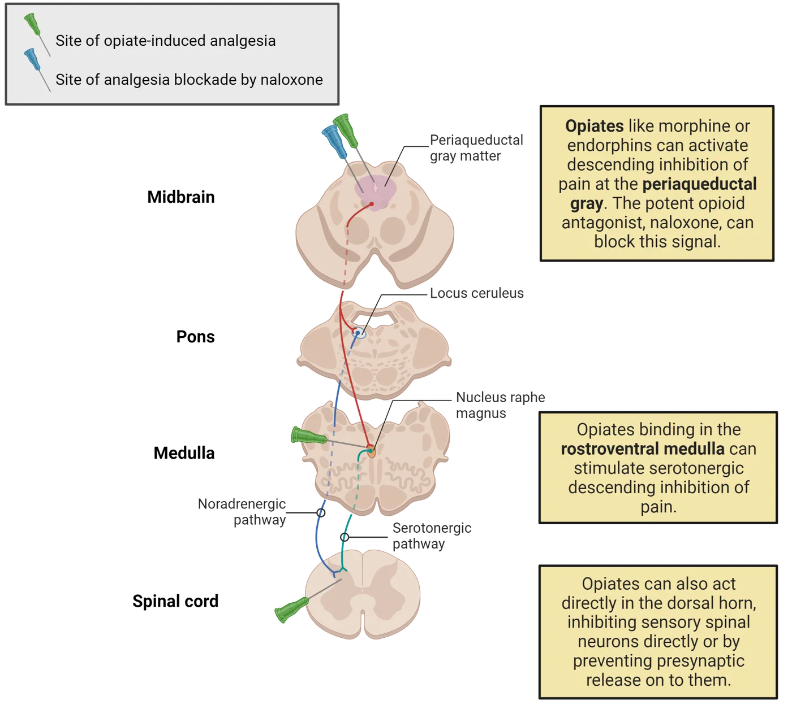
Cannabinoids
Marijuana is from a plant called hemp. Its main, active ingredient is THC (short for delta-9-tetrahydrocannabinol). THC is active in modulating pain because it interacts with our endogenous cannabinoid (endocannabinoid) system. The most commonly studied endocannabinoid systems include anandamide, and 2-arachidonylglycerol (2-AG). Both anandamide and 2-AG bind to receptors (cannabinoid receptor-1, and -2 (CB1-R, CB2-R)) found throughout the body and nervous system. CB1-Rs are mainly in the brain, particularly in the substantia nigra, the basal ganglia, limbic system, hippocampus, and cerebellum, but are also expressed in the peripheral nervous system. Cannabinoid receptor distribution shows an example of CB1-R distribution in the human brain. CB2-Rs are mostly expressed in immune cells, the spleen and the gastrointestinal system, and to some extent in the brain and peripheral nervous system.
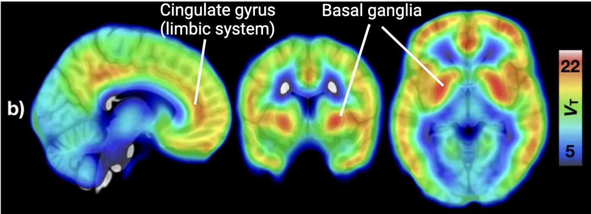
CB1-R modulates pain signaling in several regions in the peripheral and central nervous system, including the primary afferent terminals, the dorsal root ganglion (DRG), the dorsal horn of the spinal cord, the periaqueductal gray matter, the ventral posterolateral thalamus, and cortical regions associated with central pain processing, including the anterior cingulate cortex, amygdala and prefrontal cortex (Hill et al., 2017). Function of endocannabinoid receptors shows how CB receptor activation inhibits presynaptic release, a reminder of processes we learned about in Introduction. Through activation of the G-protein mechanism, CB1-Rs modulate the activity of a number of ion channels via inhibiting presynaptic voltage-dependent Ca2+ channels to reduce synaptic vesicle release, and also opening inwardly rectifying K+ channels to hyperpolarize the presynaptic terminal.
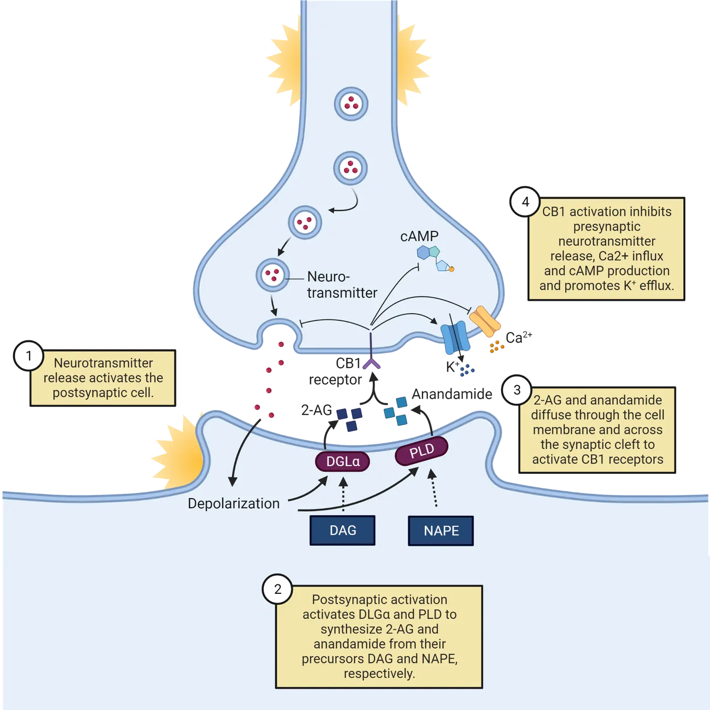
The net consequence of the CB1-R is therefore to augment membrane hyperpolarization and inhibit the release of neurotransmitters in several central and peripheral regions responsible for mediating pain signals. Exogenous cannabinoids, such as the THC in marijuana, can tap into this endogenous pain modulation network by activating CB receptors in the brain, spinal cord, and peripheral sites. For example, cannabinoid-induced analgesia has been demonstrated for both neuropathic pain and cancer pain (Atakan, 2012; Whiting et al., 2015; Stockings et al., 2018; Lossignol, 2019; Bouchet and Ingram, 2020; Finn et al., 2021).
Capsaicin
Capsaicin is the main active ingredient of the hot chili pepper. We first introduced the capsaicin receptor when we learned about its role in activating temperature sensitive TRP channels. TRP channels belong to a superfamily of 28 cation permeable channels and each one is sensitive to a specific range of temperatures (Samanta et al., 2018). Many of them also activate in response to specific chemicals. In 2021, a Nobel prize was awarded to the scientist who discovered a TRP channel that specifically responded to capsaicin (Caterina et al., 1997) (see The TRP ion Channels). This transient receptor potential vanilloid type 1 (TRPV1, formerly VR1) receptor is also activated by heat and protons (lower pH or acidic). It is located in both peripheral and central nervous systems. In the PNS, it is mainly presented in the C-fibers and Aδ fibers.
TRPV1 channels are non-selective cation channels that are permeable to Ca2+, Na+, and K+, meaning they net depolarize a cell. Activation of enough TRPV1 channels can ultimately result in action potential generation, leading to nociception. Interestingly, although the sensation associated with capsaicin in the short term is pain, in the long term, repeatedly treated tissue can become desensitized to subsequent noxious stimuli. Excessive Ca2+ influx leads to excitotoxicity (literally death from too much excitation) that causes nerve degeneration and loss of pain sensation. It has been found that baby rats treated with capsaicin lose their nociceptive behavior after they grow up (Ruda et al., 2000; Peng et al., 2003). This property has been explored for analgesic purposes (try to find capzasin cream over the counter in any pharmacy). This is also why people can build up a tolerance to spicy foods by eating them repeatedly.
Surgical treatment
Surgical approaches to treating pain fall within four broad classes: decompression, reconstruction, ablation, and modulation.
Decompression procedures are commonly performed to release entrapped sensory structures and potentially relieve pain. For example, carpal tunnel for the median nerve and fibular head for the common peroneal nerve is the most common place where the nerve can be compressed leading to pain. Cutting the carpal tunnel ligament can release the compression of the median nerve, which in turn, relieves pain.
Reconstruction refers to attempts to directly repair injured neural elements, such as the nerve grafting following peripheral nerve transection or nerve root replantation following brachial plexus avulsion (a tear of the nerve roots from the cervical segments due to extensive lateral bending of the head or pull of arm).
Ablation procedures aim to disrupt or transect the pain-signaling pathways in the periphery (e.g., peripheral neurectomy, dorsal rhizotomy, dorsal root ganglionectomy), spinal cord (e.g., anterolateral cordotomy, to cut the anterior lateral part of the spinal cord), brainstem, or pain-processing centers in the diencephalon and telencephalon. Cingulotomy (disconnecting the cingulate cortex from the rest of the brain) is a CNS ablation technique that evolved from frontal lobotomy (chop off a part of a lobe) that was developed to avoid the neurocognitive complications of lobotomy. The anterior cingulate cortex is a structure that has been implicated in contributing to the emotional aspects of pain. However, caution should be taken since bilateral cingulotomy for chronic pain showed side effects of worse executive function, attention, and self-initiated behavior, though language, motor control, and memory were not affected.
Modulation aims to alter pain signaling or processing either electrically (nerve stimulators) or pharmacologically (intrathecal drug pumps). The next section discusses stimulation-based pain relief in more detail.
Electrical/magnetic stimulation
Electrical stimulation of nerves, spinal cord, and/or brain can be used to relieve pain. Magnetic stimulation of the brain has also been successfully used to treat pain (Tan and Kuner, 2021).
Peripheral nerve stimulation can be used to relieve pain via both invasive and non-invasive methods. Transcutaneous electrical nerve stimulation, TENS, is a non-invasive method for stimulating the peripheral nerve. In TENS, electrodes on the skin transmit small electrical pulses to provide pain relief (Transcutaneous electrical nerve stimulation for pain).
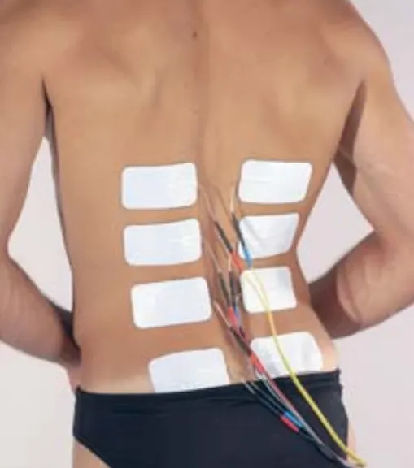
Spinal cord stimulation (SCS) emerged as a direct clinical application of the gate control theory of Melzack and Wall published in 1965. It was designed to be effective in suppressing pain of a nociceptive nature (both acute and chronic), and has been in use since the early 1970s. It is now one of the mainstream treatments of neuropathic pain. This technique is based on the original idea that antidromic (against the action potential propagation direction) stimulation of the large fibers in the dorsal columns may activate the proposed gating mechanisms in the dorsal horn. It is also called dorsal column stimulation because of this focus on stimulating dorsal pathways. Spinal cord stimulation (SCS) shows an example of this kind of electrode placement. The frequency is usually 60–100 Hz, and the pulse width is between 100 and 500 μsec. The effective amplitude varies but should be set to produce comfortable paresthesias, usually in the range of 2–6 V for "constant-voltage" systems (Sdrulla et al., 2018; Rock et al., 2019; Schmidt, 2019; Fontaine, 2021; Sun et al., 2021).
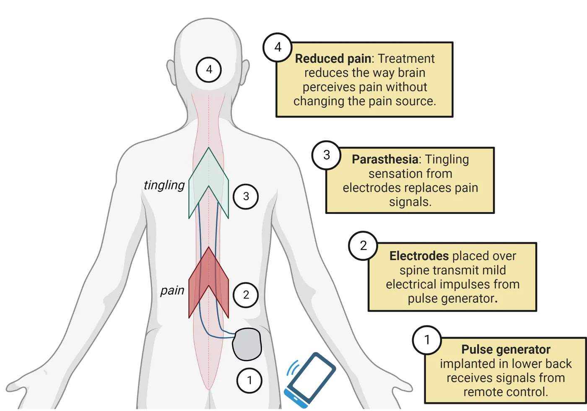
Motor cortex stimulation (MCS) has been found to be effective against some otherwise extremely therapy-resistant pain conditions: central post-stroke pain (as the consequence of damage of the thalamus by stroke) and trigeminal deafferentation pain (results from injury to the trigeminal nerve from trauma or surgery). Notably, central post-stroke pain is one of the most therapy-resistant neuropathic pain conditions, and MCS is one of the only treatments that have been shown to provide relief in this condition.
Intracerebral stimulation, or deep brain stimulation (DBS), is also useful for the management of pain otherwise resistant to any therapeutic modality. Two major target regions for stimulation are shown in Deep brain stimulation for pain: (1) the sensory thalamic (STh) nuclei (ventral posterior medial [VPM], ventral posterior lateral [VPL]), and (2) the PAG/PVG region. There is solid evidence that stimulation in the sensory thalamus is selectively effective for neuropathic (deafferentation) pain whereas PAG/PVG stimulation appears to preferentially influence nociceptive or mixed forms of pain (Lefaucheur, 2017; Hussein et al., 2018; Senatus et al., 2020; Knotkova et al., 2021; Nüssel et al., 2021; Ramos-Fresnedo et al., 2022).
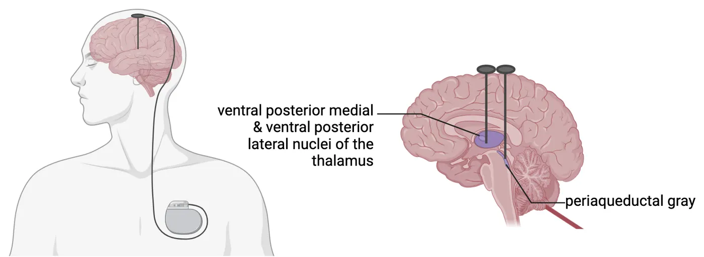
Repetitive transcranial magnetic stimulation (rTMS) is a non-invasive and relatively painless tool that has been used to treat chronic pain, in addition to studying various cognitive functions with various neuropsychiatric disorders. It uses an electromagnetic coil to generate a magnetic field that passes easily and painlessly through the skull and into the brain (see Repetitive transcranial magnetic stimulation for pain) (see Methods: rTMS). These pulses induce changes in cortical excitability at the stimulation site and transynaptically at distant areas to achieve its effect. It is found that rTMS is beneficial for treating neuropathic pain of various origins, such as central pain, pain from peripheral nerve disorders, fibromyalgia, and migraine (Gatzinsky et al., 2021; Zang et al., 2021).
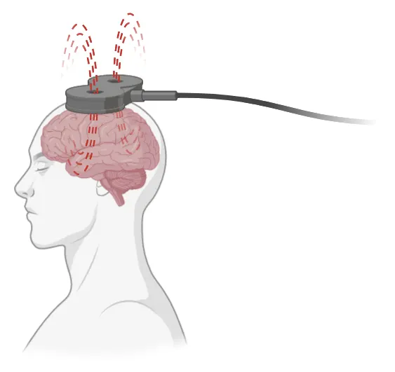
Summary
Treatment of pain can be delivered through various strategies, from the over-the-counter medication to prescription drugs, behavioral cognitive treatment to physical therapy, and other instrumental measures including invasive or non-invasive stimulation of the nervous system (peripheral and central), and finally, surgical options.
Key terms
Placebos, opioids, endorphins, cannabinoids, capsaicin, magnetic stimulation, spinal cord stimulation (SCS), transcranial electrical stimulation, motor cortex stimulation (MCS), transcutaneous electrical nerve stimulation (TENS), decompression, ablationReferences
Atakan, Z. (2012). Cannabis, a complex plant: Different compounds and different effects on individuals. Therapeutic Advances in Psychopharmacology, 2(6), 241–254. https://doi.org/10.1177/2045125312457586
Bagley, E. E., & Ingram, S. L. (2020). Endogenous opioid peptides in the descending pain modulatory circuit. Neuropharmacology, 173, 108131. https://doi.org/10.1016/j.neuropharm.2020.108131
Bouchet, C. A., & Ingram, S. L. (2020). Cannabinoids in the descending pain modulatory circuit: Role in inflammation. Pharmacology & Therapeutics, 209, 107495. https://doi.org/10.1016/j.pharmthera.2020.107495
Corder, G., Castro, D. C., Bruchas, M. R., & Scherrer, G. (2018). Endogenous and exogenous opioids in pain. Annual Review of Neuroscience, 41, 453–473. https://doi.org/10.1146/annurev-neuro-080317-061522
Finn, D. P., Haroutounian, S., Hohmann, A. G., Krane, E., Soliman, N., & Rice, A. S. C. (2021). Cannabinoids, the endocannabinoid system, and pain: A review of preclinical studies. Pain, 162(Suppl 1), S5–S25. https://doi.org/10.1097/j.pain.0000000000002268
Fontaine, D. (2021). Spinal cord stimulation for neuropathic pain. Revue Neurologique, 177(7), 838–842. https://doi.org/10.1016/j.neurol.2021.07.014
Gatchel, R. J., Peng, Y. B., Peters, M. L., Fuchs, P. N., & Turk, D. C. (2007). The biopsychosocial approach to chronic pain: Scientific advances and future directions. Psychological Bulletin, 133(4), 581–624. https://doi.org/10.1037/0033-2909.133.4.581
Gatzinsky, K., Bergh, C., Liljegren, A., Silander, H., Samuelsson, J., Svanberg, T., & Samuelsson, O. (2020). Repetitive transcranial magnetic stimulation of the primary motor cortex in management of chronic neuropathic pain: A systematic review. Scandinavian Journal of Pain, 21(1), 8–21. https://doi.org/10.1515/sjpain-2020-0054
Hill, K. P., Palastro, M. D., Johnson, B., & Ditre, J. W. (2017). Cannabis and pain: A clinical review. Cannabis and Cannabinoid Research, 2(1), 96–104. https://doi.org/10.1089/can.2017.0017
Hofmann, S. G., Asnaani, A., Vonk, I. J., Sawyer, A. T., & Fang, A. (2012). The efficacy of cognitive behavioral therapy: A review of meta-analyses. Cognitive Therapy and Research, 36(5), 427–440. https://doi.org/10.1007/s10608-012-9476-1
Hussein, A. E., Esfahani, D. R., Moisak, G. I., Rzaev, J. A., & Slavin, K. V. (2018). Motor cortex stimulation for deafferentation pain. Current Pain and Headache Reports, 22(6), 45. https://doi.org/10.1007/s11916-018-0697-1
Klinger, R., Colloca, L., Bingel, U., & Flor, H. (2014). Placebo analgesia: Clinical applications. Pain, 155(6), 1055–1058. https://doi.org/10.1016/j.pain.2013.12.007
Klinger, R., Stuhlreyer, J., Schwartz, M., Schmitz, J., & Colloca, L. (2018). Clinical use of placebo effects in patients with pain disorders. International Review of Neurobiology, 139, 107–128. https://doi.org/10.1016/bs.irn.2018.07.015
Knotkova, H., Hamani, C., Sivanesan, E., Le Beuffe, M. F. E., Moon, J. Y., Cohen, S. P., & Huntoon, M. A. (2021). Neuromodulation for chronic pain. Lancet (London, England), 397(10289), 2111–2124. https://doi.org/10.1016/S0140-6736(21)00794-7
Lefaucheur, J. P. (2017). The complex relationship between pain and motor cortex. Brain Stimulation, 10(2), 382. https://doi.org/10.1016/j.brs.2017.01.130
Lossignol, D. (2019). Cannabinoids: A new approach for pain control?. Current Opinion in Oncology, 31(4), 275–279. https://doi.org/10.1097/CCO.0000000000000523
McCracken, L. M., & Turk, D. C. (2002). Behavioral and cognitive-behavioral treatment for chronic pain: Outcome, predictors of outcome, and treatment process. Spine, 27(22), 2564–2573. https://doi.org/10.1097/00007632-200211150-00033
Melzack, R. (2001). Pain and the neuromatrix in the brain. Journal of Dental Education, 65(12), 1378–1382.
Melzack, R. (2005). Evolution of the neuromatrix theory of pain. The Prithvi Raj Lecture: Presented at the third World Congress of World Institute of Pain, Barcelona 2004. Pain Practice: The Official Journal of World Institute of Pain, 5(2), 85–94. https://doi.org/10.1111/j.1533-2500.2005.05203.x
Mundt, J. M., Roditi, D., & Robinson, M. E. (2017). A comparison of deceptive and non-deceptive placebo analgesia: Efficacy and ethical consequences. Annals of Behavioral Medicine: A Publication of the Society of Behavioral Medicine, 51(2), 307–315. https://doi.org/10.1007/s12160-016-9854-0
Nüssel, M., Hamperl, M., Maslarova, A., Chaudhry, S. R., Köhn, J., Stadlbauer, A., Buchfelder, M., & Kinfe, T. (2021). Burst motor cortex stimulation evokes sustained suppression of thalamic stroke pain: A narrative review and single-case overview. Pain and Therapy, 10(1), 101–114. https://doi.org/10.1007/s40122-020-00221-0
Peng, Y. B., Ling, Q. D., Ruda, M. A., & Kenshalo, D. R. (2003). Electrophysiological changes in adult rat dorsal horn neurons after neonatal peripheral inflammation. Journal of Neurophysiology, 90(1), 73–80. https://doi.org/10.1152/jn.01019.2002
Ramos-Fresnedo, A., Perez-Vega, C., Domingo, R. A., Cheshire, W. P., Middlebrooks, E. H., & Grewal, S. S. (2022). Motor cortex stimulation for pain: A narrative review of indications, techniques, and outcomes. Neuromodulation: Journal of the International Neuromodulation Society, 25(2), 211–221. https://doi.org/10.1016/j.neurom.2021.10.025
Rock, A. K., Truong, H., Park, Y. L., & Pilitsis, J. G. (2019). Spinal cord stimulation. Neurosurgery Clinics of North America, 30(2), 169–194. https://doi.org/10.1016/j.nec.2018.12.003
Ruda, M. A., Ling, Q. D., Hohmann, A. G., Peng, Y. B., & Tachibana, T. (2000). Altered nociceptive neuronal circuits after neonatal peripheral inflammation. Science (New York, N.Y.), 289(5479), 628–631. https://doi.org/10.1126/science.289.5479.628
Schafer, S. M., Geuter, S., & Wager, T. D. (2018). Mechanisms of placebo analgesia: A dual-process model informed by insights from cross-species comparisons. Progress in Neurobiology, 160, 101–122. https://doi.org/10.1016/j.pneurobio.2017.10.008
Schmidt, G. L. (2019). The use of spinal cord stimulation/neuromodulation in the management of chronic pain. The Journal of the American Academy of Orthopaedic Surgeons, 27(9), e401–e407. https://doi.org/10.5435/JAAOS-D-17-00829
Sdrulla, A. D., Guan, Y., & Raja, S. N. (2018). Spinal cord stimulation: Clinical efficacy and potential mechanisms. Pain Practice: The Official Journal of World Institute of Pain, 18(8), 1048–1067. https://doi.org/10.1111/papr.12692
Senatus, P., Zurek, S., & Deogaonkar, M. (2020). Deep brain stimulation and motor cortex stimulation for chronic pain. Neurology India, 68(Supplement), S235–S240. https://doi.org/10.4103/0028-3886.302471
Stockings, E., Campbell, G., Hall, W. D., Nielsen, S., Zagic, D., Rahman, R., Murnion, B., Farrell, M., Weier, M., & Degenhardt, L. (2018). Cannabis and cannabinoids for the treatment of people with chronic noncancer pain conditions: A systematic review and meta-analysis of controlled and observational studies. Pain, 159(10), 1932–1954. https://doi.org/10.1097/j.pain.0000000000001293
Sun, L., Peng, C., Joosten, E., Cheung, C. W., Tan, F., Jiang, W., & Shen, X. (2021). Spinal cord stimulation and treatment of peripheral or central neuropathic pain: Mechanisms and clinical application. Neural Plasticity, 2021, 5607898. https://doi.org/10.1155/2021/5607898
Tan, L. L., & Kuner, R. (2021). Neocortical circuits in pain and pain relief. Nature Reviews Neuroscience, 22(8), 458–471. https://doi.org/10.1038/s41583-021-00468-2
Vase, L., & Wartolowska, K. (2019). Pain, placebo, and test of treatment efficacy: A narrative review. British Journal of Anaesthesia, 123(2), e254–e262. https://doi.org/10.1016/j.bja.2019.01.040
Wager, T. D., & Atlas, L. Y. (2015). The neuroscience of placebo effects: Connecting context, learning and health. Nature Reviews Neuroscience, 16(7), 403–418. https://doi.org/10.1038/nrn3976
Whiting, P. F., Wolff, R. F., Deshpande, S., Di Nisio, M., Duffy, S., Hernandez, A. V., Keurentjes, J. C., Lang, S., Misso, K., Ryder, S., Schmidlkofer, S., Westwood, M., & Kleijnen, J. (2015). Cannabinoids for medical use: A systematic review and meta-analysis. JAMA, 313(24), 2456–2473. https://doi.org/10.1001/jama.2015.6358
Zang, Y., Zhang, Y., Lai, X., Yang, Y., Guo, J., Gu, S., & Zhu, Y. (2021). Repetitive transcranial magnetic stimulation for neuropathic pain on the non-motor cortex: An evidence mapping of systematic reviews. Evidence-Based Complementary and Alternative Medicine: eCAM, 2021, 3671800. https://doi.org/10.1155/2021/3671800
Practice The multiple-choice and fill-in-the-blank questions for this section are interactive and live on OpenStax, so they are not carried here: open the book on openstax.org.
Adapted from Introduction to Behavioral Neuroscience by OpenStax, licensed under CC BY-NC-SA 4.0. Access for free at openstax.org. Changes: set in this site’s own pages and type, the images recompressed, the interactive exercises and videos linked rather than carried. This adaptation is offered under the same licence.